Livro · Instalações Barja · 2005
Antologia da Obra
O livro Instalações Barja reúne, pela primeira vez, os registros das instalações de Wagner Barja — uma obra altamente coesa, do profeta e a jaguatirica às armadilhas semânticas. Com textos críticos de Álvaro Faleiros, Roland de Campos, Marília Panitz, Mercedes Replinger, Bené Fonteles, Eugène Bavcar e outros.
Textos críticos
Apresentação
Pela primeira vez reunidos em livro, os registros das instalações de Wagner Barja permitem um olhar sobre uma obra altamente coesa, constituída ao longo do tempo no vórtice de questões que atravessam a arte: a palavra, a imagem, o objeto, o corpo e a cidade.
Álvaro Faleiros — do livro Instalações Barja (2005)
Do AKD-mico ao POLÊ-mico
Análise do poema-rebus AKD-Mico (1986): bananas formam as letras A, K e D, ao lado de um pequeno mico vivo — mensagem crítica ao establishment artístico, com verve satírica. O poema liga-se à linhagem da poesia visual.
Roland de Campos — do livro Instalações Barja (2005)
Ao que Importa — Uma Resposta
Sobre o ângulo adequado para poetizar o mundo: reduzir ‘um problema intrincado a pontos simples e claros…’. Diversão e complexidade, como deve ser a vida.
Marília Panitz — do livro Instalações Barja (2005)
Linguagem do Olhar
O olho tem uma história e uma linguagem que nos fala. A obra de Barja é abordada a partir da escuta desse olhar: da luminosidade à obscuridade, até o olho pineal que a tradição imaginou para contemplar o sol.
Mercedes Replinger González — do livro Instalações Barja (2005)
A Escuta de uma Pintura
O filósofo cego escuta a pintura de Barja: naquele dia, o sol lançava seus fogos sobre o Rio de Janeiro, e a voz de Wagner Barja contava os fatos picturais.
Eugène Bavcar — do livro Instalações Barja (2005)
Mognus Dei
Sobre a armadilha-obranome de Barja: estrategicamente posicionada no vórtice do cruzeiro, a peça está ‘pronta para mexer com a imagética’ do poder — um Barja canibal, que devora o símbolo-mito.
Bené Fonteles — do livro Instalações Barja (2005)
Documentos incertos: no lugar do monstro
O animal fantástico é uma ofensa à Criação. Em ‘São João Beuys’, Barja recorda a peça SaFG-SaUG de Beuys e associa as travessias de São João e Beuys, ambos profetas no deserto.
Mercedes Replinger González — do livro Instalações Barja (2005)
As instalações
Todas as obras do livro, cada uma com os textos que falam dela e com as imagens das páginas em alta resolução.
DA2
Instalação documentada no livro Instalações Barja.
1985/86O Profeta e a Jaguatirica
Instalação documentada no livro Instalações Barja.
1986Expressosionismo
Instalação documentada no livro Instalações Barja.
1986Pega Monet, Pega Manet
Instalação documentada no livro Instalações Barja.
1986Neoconcreto (NEO)
Instalação documentada no livro Instalações Barja.
1986De Onde Vem a Escuridão
Instalação documentada no livro Instalações Barja.
1986O Casamento de Mme X com M. Duchamp
Instalação documentada no livro Instalações Barja.
1990H2O Monet
Instalação documentada no livro Instalações Barja.
1990São João Beuys
Instalação documentada no livro Instalações Barja.
1997/98Jardim de Bengalas
Instalação documentada no livro Instalações Barja.
1998Agulha no Palheiro
Instalação documentada no livro Instalações Barja.
1999/00Sol de Goethe
Instalação documentada no livro Instalações Barja.
1999/00Cegomóvel Hermógenes
Instalação documentada no livro Instalações Barja.
1999/00Medusa
Instalação documentada no livro Instalações Barja.
1999/00TV Anal
Instalação documentada no livro Instalações Barja.
1999/00Caverna
Instalação documentada no livro Instalações Barja.
1998/04Cultura x Natureza = Barbárie
Instalação documentada no livro Instalações Barja.
1985Cubo Cruz Lápide
Instalação documentada no livro Instalações Barja.
1986FIKE
Instalação documentada no livro Instalações Barja.
1986Deitado Eternamente
Instalação documentada no livro Instalações Barja.
DA2
1986 — do livro Instalações Barja
Textos que falam desta instalação
- 1986 DA2 Mognus Dei -1999 Notas: 1 Estes trabalhos estiveram expostos em Brasília, no Conjunto Cultural da Caixa, em Buenos Aires, no Centro de Arte Moderno de Quilmes e em Madri, no Centro Cultural El Cruce, cada um deles estabelecendo uma conversa com o lugar em que se instalou (em Madri, por exemplo, contou com a colaboração dos cegos que vendem bilhetes de loteria pelas ruas da cidade). 2 Em sua versão original, a “Burro sem Rabo - Experiência Tumulto - I” foi desenvolvida em parceria com performances de Márcia X e Alex Hamburger, nos anos 80, no Rio de Janeiro. A segunda foi realizada em Brasília
Livro Instalações Barja — pág. 11the marriage of Márcia X and Marcel Duchamp Prophet and the Ocelot - 1986 DA2 Mognus Dei -1999 laid out eternally… H O monet Mme X / m.duchamp DA fike saint john beuys zionistexpress Notes: 1 - These works were exhibited in Brasilia, at the Conjunto Cultural da Caixa; in Buenos Aires, at the Centro de Arte Moderno de Quilmes; and in Madrid, at the Centro Cultural El Cruce; each time, a conversation was established with the local community (in Madrid, for example, blind lottery-ticket vendors from the streets were engaged in participating). 2 - The original 80’s version of TurbulenceExperience was developed in partnership with Márcia X and Alex Hamburger in Rio de Janei
Livro Instalações Barja — pág. 91DA2 (1986) contribution of conceptual richness that Brazilian concrete poetry brought to artists linked to visual poetry. An example are the Poemobiles, pieces conceived in 1973 by Augusto de Campos and the Spaniard, Julio Plaza, where a verbo-visual language adopts a three-dimensional component through interactivity. Leafing through the “book-poem” brings forth the message of a poetry with concrete roots, accompanied by movement which reaches to fill the space (21). The intent is to organize a poem, independent of how the verse is written, according to graphic criteria which emphasize the materi
Livro Instalações Barja — pág. 99DA2 Mognus Dei (1990)
Livro Instalações Barja — pág. 120

O Profeta e a Jaguatirica
1985/86 — do livro Instalações Barja
Textos que falam desta instalação
O PROFETA E A JAGUATIRICA 1985-86
Catálogo Experiência Tumulto III — pág. 11THE PROPHET AND THE OCELOT - In “The Proph- et and the Ocelot” (1985-86), the Baroque is con- templated as a contemporary style peculiar to the modernity allied to Brazilian nature, creating a space from which one can question the value of the sign - visual and linguistic - of the artist’s own name. It envelops with its sound the figure of the prophet Oseas - his name means salvation - executed by the sculptor Aleijadinho, whose shadow delineates the squashed shadow of an Ocelot. The whole thing covered by a kind of veil with wings of guinea fowl [a key animal in the rites and ceremonies of Candomblé]. A work that adop
Catálogo Experiência Tumulto III — pág. 12sfeito e transgressor, Barja optou, desde o início, pela instalação como suporte para a sua reflexão-diálogo. A partir dos trabalhos de Barja, uma série de teóricos e artistas brasileiros e europeus: Evgene Bavcar, Mercedes Replinger, Adolfo Montejo Navas, Roland Campos, Angélica Madeira, Bené Fonteles e Marília Panitz produziram um conjunto importante de reflexões que acompanham esta compilação de registros que sobreviveram ao tempo. É possível, desse modo, aqui percorrer vinte anos de história por meio dos projetos e das instalações: “Experiência Tumulto (1985)”, “Cubo Cruz Lápide (1985)”, “O Profeta e a Jaguatirica (1985-86)”, “DO AKD-MICO AO POLE-MICO (1986)”, “Mognus Dei (1990)”, “O Sol de Goethe (1999)”, “São João Beuys (1990)”, “Ser ou não Ser, Ao Gullar (1993)”, “Pega Manet/De Onde Vem A Escuridão (1986)”, “TV Anal (1999)”, “Hermógenes (1999)”, “Obranome (2003)” e “Cultura X Natureza = Barbárie (1998/2005)” Marília Panitz, em seu texto “Ao que importa, uma resposta”, propõe um itinerário de leitura das obras de Barja, a partir do conceito de equação, tão caro ao artista. Nos “enigmas de equações visuais” dos comentários-construções de Barja, a autora destaca a condensação d
Livro Instalações Barja — pág. 5seu trabalho e na sua forma de abordar a arte o que o resulta, inclusive, em sua dissertação de mestrado Barja, em determinado momento, se vê frente à contingência de ouvir, do grande teórico do movimento, a afirmação da “morte da arte”. Seu comentário-resposta é uma obra/mausoléu, uma declaração de discordância pelo estabelecimento de um jogo de espelhos, onde o vaticínio se volta para quem o pronuncia. Jogo construtivo que se repete na fragilidade da estrutura de outro trabalho (outro mausoléu), sua pirâmide de copos com líquidos coloridos, construída sobre um espelho, sua Queóps Brasilis. o profeta e a jaguatirica natureza x cultura = barbárie
Livro Instalações Barja — pág. 9é o humor... Assim como naquela cama de campanha de estrutura verde, cuja lona é do amarelo da bandeira nacional e, à maneira de um travesseiro, já fora de lugar pelo uso, está jogado o círculo azul, onde a inscrição positivista que nos constitui como nação é substituída pelo verso do hino “Deitado eternamente...”. Ou talvez, como na proposta de (di)fusão entre a expressão (já antropofágica) do barroco brasileiro e o seu suporte de florescimento: a “terra brasilis”. Essa é talvez uma pré (re) leitura da equação proposta no jogo dos aquários “Natureza X Cultura = Barbárie” : seu livro/equação “O Profeta e a Jaguatirica”, no qual o Oséias de Aleijadinho (aquele profeta que simboliza a infidelidade do povo judeu ao verdadeiro Deus) divide o espaço com o couro estendido do felino, surgindo por detrás de dois recobrimentos o que quase submerge as imagens, uma superfície de plumas; e a transparência do acetato estampado pelos prefixos superlativos (afinal é barroco, é antropofagia cultural e é natureza superlativa... e morta): hiper, super, supra... Ou ainda, na matemática subvertida em que a soma de duas parcelas implica em um produto que é mais do que elas é efeito de cópula (como prop
Livro Instalações Barja — pág. 10de um meio estruturalmente contraditório, plural e polissêmico (36). Definitivamente o axioma: Tudo o que se tem a ver é o que se vê. (what you see is what you see) que enunciara Stella, se transforma agora num luminoso e profético, aquilo que vês, não é só o que vês. Cenografias barrocas No livro das semelhanças, Edmon Jabés se pergunta pelo caminho que há de seguir para alcançar as fontes, as origens da escritura, da criação artística. Disse: “Primeiro se necessita ser nomeado e depois será necessário assumir, com o próprio nome, a sorte de cada som, de cada signo que o perpetuam” (37).Em “O Profeta e a Jaguatirica” (1985-86), o Barroco é contemplado como um estilo contemporâneo peculiar da modernidade em aliança com a natureza brasileira, forjando o lugar de onde se pode interrogar o valor do signo, visual e lingüístico do nome próprio do artista. Ali, as palavras que declinam os distintos tipos de representação: realismo, hiper realismo, realismo fantástico, são expostas, deslizando-se desordenadamente por uma tábua, como aquelas onde se exibem mercadorias, envolvendo com seus sons a figura do profeta Oséias que quer dizer salvação realizada pelo escultor Aleijadinho cuja sombr
Livro Instalações Barja — pág. 22Em “O Profeta e a Jaguatirica” (1985-86), Barja, seleciona como primeiro ícone desta representação, um dos profetas, Oséias, que o Aleijadinho levantou em pedra-sabão no conjunto monumental do átrio do santuário de Bom Jesus de Matosinhos, na cidade mineira de Congonhas do Campo, conhecido como Os Profetas (1777-1790). Uma autêntica cenografia barroca organizada segundo um tenso equilíbrio de contrários, um jogo de compensações de excepcional força, por sua vez, suntuoso e contido, voluptuoso e religioso. A figura de Oséias é a mais importante dos profetas menores, denominados assim pela brevidade de seus textos, se encon
Livro Instalações Barja — pág. 23icar no solo atual o lugar onde se conservou o antigo. Visto que as verdadeiras recordações não devem dar conta do passado, como descrever o lugar em que o pesquisador tomou posse dele?” (41). Wagner Barja, sem dúvida, ouvirá com atenção o lugar desse descobrimento de um passado, deformado com uma potência expressionista quase selvagem, que se projeta como futuro, justo no mesmo espaço onde tomou conta dele: na terra a que pertence. Por esta razão, o profeta Oséias inscreve sua sombra, quase se funde, com o rastro de um animal originário de uma região, cuja espécie está à beira da extinção: a Jaguatirica, o Leopardus pardalis, animal que habita as florestas tropicais, a Caatinga, os Cerrados e o Pantanal e que muitas vezes é confundido com o gato do mato ou com o gato maracajá. Um belo animal não domesticado, de hábitos noturnos e solitários, capaz de adaptar-se, inclusive, a ambientes degradados. Todo o conjunto de “O Profeta e a Jaguatirica” é envolto em penas de galinha d'Angola, ave oriunda da África, um animal chave nos ritos e cerimônias da prática do Candomblé (42). Cada um desses ícones: O Aleijadinho, a Jaguatirica, e a galinha d'Angola convertem o conjunto desta peça em u
Livro Instalações Barja — pág. 24ça da vanguarda. Como diz Angel González: “uma peça de Duchamp produz interpretações, uma de Matisse, produz sensações. Porém, uma imagem de Beuys produz novas imagens, como se às imagens de Beuys lhes faltara algo: estiveram incompletas. Não se trata pois ou não me parece, de um caso de hipnose pedagógica, senão de exibição persuasiva de algo imperfeito, insuficiente, não resolvido” (45). Beuys vem abrir para a arte contemporânea um espaço dramático que parece exigir posteriormente a prolongação obsessiva de novas figuras, de novas obras e, também, a construção de alguns relatos legendários. o profeta e a jaguatirica
Livro Instalações Barja — pág. 25o profeta e a jaguatirica - 1985/86
Livro Instalações Barja — pág. 48


Expressosionismo
1986 — do livro Instalações Barja
Textos que falam desta instalação
Arquitetura que comenta a pintura (uma pirâmide-vitral?) e brinca com a simbologia da pirâmide social, colocando-a do avesso, de cabeça para baixo (talvez pelo ensinamento recebido do grande Joaquim Torres Garcia, em seu mapa da América, imagem tão cara ao artista). A essa linha de pensamento, parece pertencer o seu Expressosionista, sobreposição de grades metálicas (como não lembrar de “Malhas da Liberdade” ou do “Através” de Cildo Meireles, do qual é contemporâneo) que encarceram uma pequena foto de um caminhão transportando judeus. A imagem centralizada, com todo apelo que o tema porta, transforma-se ali em simples anotação. A questão transfere-se para a estrutura de grades, espaço topológico, base para receber outras informações-imagens. O expresso aí comenta um estado de coisas, uma configuração possível nas relações de poder. A foto é uma entre outras (um entre outros encarceramentos). Comentários- construções que
Livro Instalações Barja — pág. 10contextos intelectuais”. (...) O conceito é uma fórmula, pura e simples; sua ornamentação (uma expansão devida aos materiais adicionais) transforma a fórmula em imagem uma forma acabada. Exatamente assim, embora em sentido contrário, como um processo de pensamento primitivo o pensamento imagístico, deslocado até um ponto definido, acaba-se transformando em raciocínio conceitual. Eisenstein, Serguei, "O princípio cinematográfico e o ideograma", In, Campos, Haroldo de, Ideograma - lógica, poesia e linguagem, p. 149-166. deitado eternamente H O monet márcia X c/ m.duchamp DA fike são joão beuys expressosionista
Livro Instalações Barja — pág. 11expressosionismo - 1986
Livro Instalações Barja — pág. 49

Pega Monet, Pega Manet
1986 — do livro Instalações Barja
Textos que falam desta instalação
PEGA MONET PEGA MANET 1986 FOTO Daniel Mira
Catálogo Experiência Tumulto III — pág. 18eiros e europeus: Evgene Bavcar, Mercedes Replinger, Adolfo Montejo Navas, Roland Campos, Angélica Madeira, Bené Fonteles e Marília Panitz produziram um conjunto importante de reflexões que acompanham esta compilação de registros que sobreviveram ao tempo. É possível, desse modo, aqui percorrer vinte anos de história por meio dos projetos e das instalações: “Experiência Tumulto (1985)”, “Cubo Cruz Lápide (1985)”, “O Profeta e a Jaguatirica (1985-86)”, “DO AKD-MICO AO POLE-MICO (1986)”, “Mognus Dei (1990)”, “O Sol de Goethe (1999)”, “São João Beuys (1990)”, “Ser ou não Ser, Ao Gullar (1993)”, “Pega Manet/De Onde Vem A Escuridão (1986)”, “TV Anal (1999)”, “Hermógenes (1999)”, “Obranome (2003)” e “Cultura X Natureza = Barbárie (1998/2005)” Marília Panitz, em seu texto “Ao que importa, uma resposta”, propõe um itinerário de leitura das obras de Barja, a partir do conceito de equação, tão caro ao artista. Nos “enigmas de equações visuais” dos comentários-construções de Barja, a autora destaca a condensação de sentidos que tem como ferramenta o humor. Apropriando-se do aço pontiagudo da ironia, munido de um riso de inspiração oswaldiana, o antropófago Barja, sob uma “forte influência do
Livro Instalações Barja — pág. 5Joseph, animal religioso: Desafiado a propor sua versão sobre o olhar contemporâneo em torno de Joseph Beuys, Barja propôs uma outra caixa/bicho, ou um tabernáculo zoomorfizado (talvez radicalizando a metaforização do termo que nomeia este pequeno altar portátil, dando-lhe a acepção de corpo como lugar protetor da alma). Seu interior é uma cuba dourada deslocada da função original de instrumento de barbear receptáculo de gordura de carneiro. Exposta à luz, ela apresenta as variações de estado da matéria orgânica (entre sólido e líquido, dependendo do calor e da incidência da luz). mognus dei pega manet pega monet DA
Livro Instalações Barja — pág. 8escobre ser Lygia Clark? ...Uma proposta poética que dê conta do inusitado do fato (que é real). Uma outra lápide talvez. Um FIKE que desfia os fios da proposta da modernidade levada ao extremo (seu fim). As fitas amarelas, azuis e vermelhas, justa homenagem a quem desafiou esses extremos e eliminou fronteiras entre arte e as (outras) coisas do mundo (com seus muitos outros fios desfiados em várias obras). Que deixar para o mundo, Mondrian? Fitas amarelas, azuis e vermelhas que comparecem recorrentemente como metáfora de um pensamento sobre (de) pintura como em De onde vem a escuridão ou em “ Pega Manet ”[4]. No primeiro trabalho, elas são elos entre as partes que não conversam necessariamente entre si, são o sustentáculo (impossível) do balanço/barra de concreto NEO e são a água da fonte que sai da boca do leão barroco na tela negra de onde a cabeça se projeta... Ou um possível caminho entre a inscrição no excesso expressivo e a ilusão da economia do mínimo, cor pura e forma ortogonal (caminho percorrido pelas mesmas tiras da obra para Lygia). A água de Giverny é aqui: Pensar pintura e produzir objeto. Em um sobrevôo sobre a história da arte, um pouso na água. Não aquela água sóli
Livro Instalações Barja — pág. 9foi realizada em Brasília, em 2002, numa reelaboração da primeira, como comentário de um dos artistas participantes, a partir de suas questões pessoais, mas mantendo algo da versão original: o trânsito entre a rua e a galeria e o diálogo com outros artistas, presentes na mostra, como é o caso de Ana Miguel, com quem Barja estabelece uma conversa que resulta no seu Livro de Barriga e numa obra em torno de Bataille, com a qual a artista participa da nova “Experiência Tumulto - II”, em Brasília. 3 Barthes, Roland “A Metáfora do Olho”, In, Ensaios Críticos, Lisboa: Edições 70, 1977, p. 328-339. 4 Pega Manet e Pega Monet são variações em torno de um jogo de acaso e perícia: no primeiro, o artista dispõe sobre um suporte preto, as estruturas precárias de uma barraca de camelô, abandonada na rua e a colore nas cores básicas: vermelho, azul e amarelo. No segundo é o jogo de varetas (cujas cores são vermelho, azul e amarelo) que é disposto como obra. 5 Em um trecho de Aspiro ao grande labirinto, Hélio Oiticica afirma algo que o trabalho de Barja parece citar: “ Quem diria que Mondrian, p. ex., não está próximo de Wols, tão próximo na expressão de grandeza interior e de concepção de vida. Mo
Livro Instalações Barja — pág. 11pega monet pega manet - 1986
Livro Instalações Barja — pág. 51pega monet pega manet - 1986
Livro Instalações Barja — pág. 53pega monet pega manet - 1986
Livro Instalações Barja — pág. 54


Neoconcreto (NEO)
1986 — do livro Instalações Barja
Textos que falam desta instalação
NEOCONCRETO 1985
Catálogo Experiência Tumulto III — pág. 16/De Onde Vem A Escuridão (1986)”, “TV Anal (1999)”, “Hermógenes (1999)”, “Obranome (2003)” e “Cultura X Natureza = Barbárie (1998/2005)” Marília Panitz, em seu texto “Ao que importa, uma resposta”, propõe um itinerário de leitura das obras de Barja, a partir do conceito de equação, tão caro ao artista. Nos “enigmas de equações visuais” dos comentários-construções de Barja, a autora destaca a condensação de sentidos que tem como ferramenta o humor. Apropriando-se do aço pontiagudo da ironia, munido de um riso de inspiração oswaldiana, o antropófago Barja, sob uma “forte influência do movimento neoconcreto” compõe um conjunto de instalações em que faz referência, no título de suas instalações, a uma série de artistas fundamentais para a arte moderna e contemporânea, como “O Sol de Goethe”, “Pega Manet”, “São João Beuys”, “Ser ou não Ser. Ao Gullar”. Panitz identifica nessas declarações “de filiação ideológica” visões próprias, ambíguas, radicais sobre o olhar contemporâneo. Visões que, nos anos 90, incorporaram a opacidade e a reelaboração do próprio conceito de olhar por meio da metáfora da cegueira. Em seu sugestivo percurso, Panitz entrelaça as fitas ocultas que vinculam umas obra
Livro Instalações Barja — pág. 5al, fazer a “mágica” da luz e sombra, sua projeção que provoca a impressão visual da água. Escritura/imagem conceitual que desvela as formas de produzir realidade pela ficção, o diedro em que ela se inscreve é aquele da geometria proposta na obra do outro HO [5] presente, é claro, como Lygia, para afirmar certa subversão temporal... ou certa perspectiva que sobrepõe as diversas aventuras desses inventores de imagens poéticas (frente às quais nosso olhar já não pode ser o mesmo). Respondendo ao crítico e outras arquiteturas: artecomentário... artenotação. Com uma forte influência do pensamento neoconcreto em seu trabalho e na sua forma de abordar a arte o que o resulta, inclusive, em sua dissertação de mestrado Barja, em determinado momento, se vê frente à contingência de ouvir, do grande teórico do movimento, a afirmação da “morte da arte”. Seu comentário-resposta é uma obra/mausoléu, uma declaração de discordância pelo estabelecimento de um jogo de espelhos, onde o vaticínio se volta para quem o pronuncia. Jogo construtivo que se repete na fragilidade da estrutura de outro trabalho (outro mausoléu), sua pirâmide de copos com líquidos coloridos, construída sobre um espelho, sua Que
Livro Instalações Barja — pág. 9r” (1993) é, sem dúvida, uma tumba- monumento, sólida, hermeticamente fechada cuja gravidade se conjuga com a desmaterialização, quase fragilidade, desse tijolo dourado que desce do teto provocando uma espécie de imortalidade interminavelmente suspensa. Porém, na minha opinião, há outras razões para escolher o formato da lápide, posto que, é óbvio, ela assemelha-se a algumas estruturas que, precisamente Ferreira Gullar, havia desenvolvido em alguns de seus geométricos poemas-objetos. Vendo essa peça, como não pensar, por exemplo, no “Poema Enterrado”, uma caixa de água que continha outras, de neoconcreto
Livro Instalações Barja — pág. 21NEO neoconcreto - 1986
Livro Instalações Barja — pág. 55nd shadows, the projection of which provokes a visual impression of water. A conceptual scripture/image that unveils the ways that fiction can produce reality; the dihedron it is inscribed on shares the same geometry as that proposed in the work of another HO - present here, of course, like Lygia, to affirm a certain subversion of time… or a certain perspective that overlies the various adventures of these inventors of poetic images (facing which, our way of seeing can never be the same again). Responding to the critic and other architectures: artcommentary artnotation. Strongly influenced by neo-concrete thinking in his work and in his approach to art – he did his master’s thesis on the subject – Barja chanced one day to hear the movement’s great theorist proclaim the "death of art". The artist’s commentary-response is a mausoleum/work, a declaration of disagreement expressed as a play of mirrors in which the vaticination is returned to the prophet. It is creative play, found repeated in the fragile structure of another work (another mausoleum), his pyramid built of cups of colored liquids, constructed over a mirror, his Queóps Brasilis. Architecture that analyzes painting (a stai
Livro Instalações Barja — pág. 89ook, expressing an explicit manifesto in his essay Argumentation Against the Death of Art (1993). Lashing out against the latest trends in contemporary art, he dismisses them as a consequence of the earlier vanguards’ transgressions, “As it is easier to destroy than to build, what the vanguardists did over the course of decades was dismantle the existing system of artistic language until it was utterly depleted; there was simply nothing left to destroy” (28). From that point on, says the critic, we can only sit on top of the ruins, trapped forever in the vanguardist illusion. cubo cruz lápide neoconcreto
Livro Instalações Barja — pág. 100

De Onde Vem a Escuridão
1986 — do livro Instalações Barja
Textos que falam desta instalação
opeus: Evgene Bavcar, Mercedes Replinger, Adolfo Montejo Navas, Roland Campos, Angélica Madeira, Bené Fonteles e Marília Panitz produziram um conjunto importante de reflexões que acompanham esta compilação de registros que sobreviveram ao tempo. É possível, desse modo, aqui percorrer vinte anos de história por meio dos projetos e das instalações: “Experiência Tumulto (1985)”, “Cubo Cruz Lápide (1985)”, “O Profeta e a Jaguatirica (1985-86)”, “DO AKD-MICO AO POLE-MICO (1986)”, “Mognus Dei (1990)”, “O Sol de Goethe (1999)”, “São João Beuys (1990)”, “Ser ou não Ser, Ao Gullar (1993)”, “Pega Manet/De Onde Vem A Escuridão (1986)”, “TV Anal (1999)”, “Hermógenes (1999)”, “Obranome (2003)” e “Cultura X Natureza = Barbárie (1998/2005)” Marília Panitz, em seu texto “Ao que importa, uma resposta”, propõe um itinerário de leitura das obras de Barja, a partir do conceito de equação, tão caro ao artista. Nos “enigmas de equações visuais” dos comentários-construções de Barja, a autora destaca a condensação de sentidos que tem como ferramenta o humor. Apropriando-se do aço pontiagudo da ironia, munido de um riso de inspiração oswaldiana, o antropófago Barja, sob uma “forte influência do movimento n
Livro Instalações Barja — pág. 5de outro anônimo que depois se descobre ser Lygia Clark? ...Uma proposta poética que dê conta do inusitado do fato (que é real). Uma outra lápide talvez. Um FIKE que desfia os fios da proposta da modernidade levada ao extremo (seu fim). As fitas amarelas, azuis e vermelhas, justa homenagem a quem desafiou esses extremos e eliminou fronteiras entre arte e as (outras) coisas do mundo (com seus muitos outros fios desfiados em várias obras). Que deixar para o mundo, Mondrian? Fitas amarelas, azuis e vermelhas que comparecem recorrentemente como metáfora de um pensamento sobre (de) pintura como em De onde vem a escuridão ou em “ Pega Manet ”[4]. No primeiro trabalho, elas são elos entre as partes que não conversam necessariamente entre si, são o sustentáculo (impossível) do balanço/barra de concreto NEO e são a água da fonte que sai da boca do leão barroco na tela negra de onde a cabeça se projeta... Ou um possível caminho entre a inscrição no excesso expressivo e a ilusão da economia do mínimo, cor pura e forma ortogonal (caminho percorrido pelas mesmas tiras da obra para Lygia). A água de Giverny é aqui: Pensar pintura e produzir objeto. Em um sobrevôo sobre a história da arte, um pou
Livro Instalações Barja — pág. 9de onde vem a escuridão - 1986
Livro Instalações Barja — pág. 56

O Casamento de Mme X com M. Duchamp
1986 — do livro Instalações Barja
Textos que falam desta instalação
O CASAMENTO DE MARCIA X COM MAR- CEL DUCHAMP 1985
Catálogo Experiência Tumulto III — pág. 23O CASAMENTO DE MARCIA X COM MARCEL DUCHAMP O ângulo adequado para se poetizar o mundo: reduzindo “um problema intrincado a pontos simples e claros...”. Di- versão e complexidade, como deve ser a vida. Marília Panitz - extraído do livro Ins- talações Barja - 2005, texto “ao que importa uma resposta” . THE MARRIAGE OF MARCIA X WITH MARCEL DUCHAMP The proper angle for poeticizing the world: reducing “a complex prob- lem to simple, clear points…”. Complexity and fun, just as life should be. Marília Panitz - extract from Insta- lações Barja - 2005 / “The relevance of an answer”. FOTO Daniel Mira
Catálogo Experiência Tumulto III — pág. 25ino, surgindo por detrás de dois recobrimentos o que quase submerge as imagens, uma superfície de plumas; e a transparência do acetato estampado pelos prefixos superlativos (afinal é barroco, é antropofagia cultural e é natureza superlativa... e morta): hiper, super, supra... Ou ainda, na matemática subvertida em que a soma de duas parcelas implica em um produto que é mais do que elas é efeito de cópula (como propunha Eisenstein em sua análise da função do ideograma comparado à montagem cinematográfica [7]), sempre mais do que se espera... sempre outra coisa. Um trabalho chamado Futurista - O Casamento de Mme. X com Marcel Duchamp parece colocar em jogo esta possibilidade: um fantasma/manequim, usando um vestido (de noiva?) de Márcia X, que tem no lugar da cabeça um ventilador da década de 30, da marca Marinetti (!!). Como anotação/comentário, está aí o (um dos) produto(s) do percurso de rupturas da história da arte no século XX. Amálgama e inscrição efêmera... para se guardar a fórmula e reaplicá-la. O ângulo adequado para se poetizar o mundo: reduzindo “um problema intrincado a pontos simples e claros...”. Diversão e complexidade, como deve ser a vida. Marilia Panitz Mestre em Te
Livro Instalações Barja — pág. 10o casamento de Mme X com M. Duchamp - 1986
Livro Instalações Barja — pág. 57the prophet and the ocelot nature x culture = barbarism o casamento de Márcia X com Marcel Ducham The death of Lygia: What would you do alone and anonymous at the wake of another anonymous person whom you later discovered to be Lygia Clark?… A poetic proposal that recognizes the unusualness of the fact (which is real). Maybe another tombstone. A FIKE that challenges the fiber of the modernist proposal taken to its extreme (its end). The red, blue, and yellow ribbons offer fitting homage to one who challenged these extremes and eliminated the barriers between art and (other) things of this world (with its many other fibers challenged in various works). What to leav
Livro Instalações Barja — pág. 89m behind two coverings that nearly submerge the images: first, a coating of feathers and, next, a transparent sheet of acetate imprinted with superlative prefixes (it is, after all, Baroque, it is cultural anthropophagy, it is nature, both superlative… and dead): hyper, super,supra... Or, even, in that subversive mathematics where the whole is greater than the sum of its parts, a copulative effect (as put forth by Eisenstein in his comparison of the function of the ideogram with cinematographic editing) always producing more than expected,… always something new. A work entitled Futurist – the marriage of Márcia X and Marcel Duchamp seems to hold out this possibility: a ghost/mannequin, wearing a dress (bridal gown?) of Marcia’s, has, where the head should be, a Marinetti (!!) fan from the 30’s. As a footnote/commentary, right there is (one of) the product(s) of the procession of ruptures in art history of the 20th century. Fusion and ephemeral inscription…the formula may be saved and re-applied. The angle is just right for poeticizing the world: reducing “a complex problem to simple, clear points…”. Fun and complex, just as life should be. Marilia Panitz MA in Art History and Theor
Livro Instalações Barja — pág. 90the marriage of Márcia X and Marcel Duchamp Prophet and the Ocelot - 1986 DA2 Mognus Dei -1999 laid out eternally… H O monet Mme X / m.duchamp DA fike saint john beuys zionistexpress Notes: 1 - These works were exhibited in Brasilia, at the Conjunto Cultural da Caixa; in Buenos Aires, at the Centro de Arte Moderno de Quilmes; and in Madrid, at the Centro Cultural El Cruce; each time, a conversation was established with the local community (in Madrid, for example, blind lottery-ticket vendors from the streets were engaged in participating). 2 - The original 80’s version of TurbulenceExperience was develope
Livro Instalações Barja — pág. 91he monster’s dwelling The fantastic beast is always an offense to Creation, probably because it implies that something was left lacking the first time. Salah Stétié slyly insinuates that the appearance of exotic man-made bestiaries is nothing more than a symptom of the limits of God’s imagination (44). On the other hand, these fictitious animals also bear in their features evidence of all the anguish and terror projected onto them by humans, for whom they, like all other animals, whether wild or domestic, represent alien, impenetrable beings. Why not just say that this marvelous fauna, unholy marriage of dream and nightmare, is the symptom of the limits of man’s reality? Balanced on a line between God and Man, we begin to contemplate the question of objects, whether the inanimate is capable of distilling a live organism. The resulting hybrid body might be like the strange creature proffered by Wagner Barja in São João Beuys (1990) (St. John Beuys), in which a small household shrine dedicated, in this case, to St. John the Baptist, bizarrely metamorphoses into an animal appointed with a large lambskin tail. to be or not to be, for Gullar
Livro Instalações Barja — pág. 104
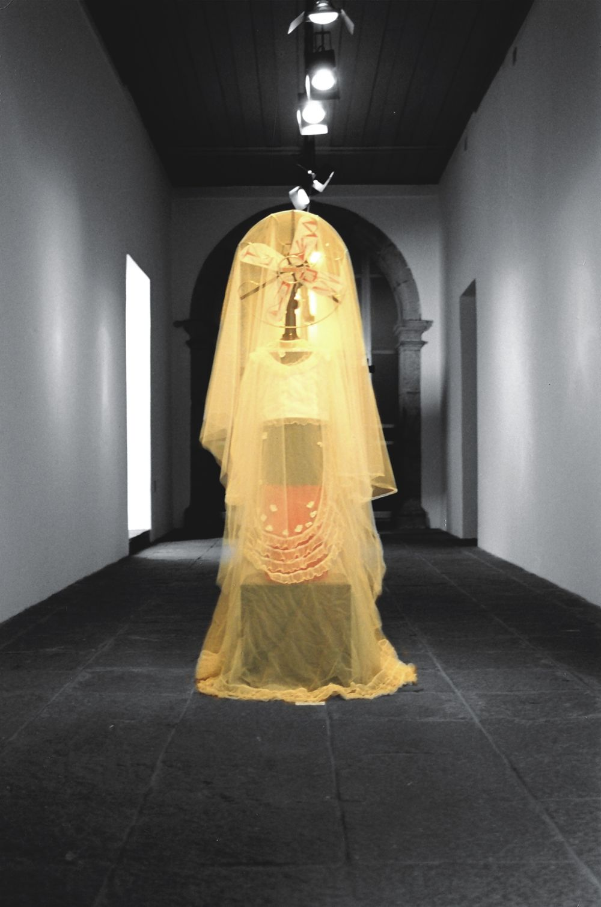
H2O Monet
1990 — do livro Instalações Barja
Textos que falam desta instalação
Longe de considerar que a poética de Wagner Bar- ja esteja fora da poesia visual, se deve inscrever nas suas coordenadas de olhar expandido grande parte de seus trabalhos. Sobretudo aqueles nos quais a nomenclatura faz parte da obra, o seu no- mear está em função determinante, num triân- gulo de potências verbais, conceituais e visuais. São vários os trabalhos então, que passam a funcio- nar com o elemento verbo-visual ativado, gerando um campo plural de forças estéticas, onde até o ter- ritório da sensorialidade é produzido por contigüi- dade conceitual e reflexiva. Assim o conjunto de Da², H2O Monet, Fike e até Natureza X Cultura = Barbárie se aproxima. Neles, a conversa submersa que se es- tabelece e visa certa infinitude, numa escrita (“esse jogo insensato de escrever”, como diria Blanchot), que aqui aposta também numa simultaneidade de linguagem. A própria idéia de “Obranome”, (motivo de curadoria e obra), está nessa freqüência não redu- cionista. Barja veicula uma corrente de pensamento que não quer repousar na anestesia retiniana, nesse sentido, não deixa de ser um sintoma, que o artista tenha orientado-se para alguns trabalhos sobre a cegueira, como para uma investigação da
Catálogo Experiência Tumulto III — pág. 41H2O MONET 1990
Catálogo Experiência Tumulto III — pág. 46H2O MONET - A ÁGUA DE GIVERNY É AQUI - Pensar pintura e produzir objeto. Em um sobrevôo sobre a história da arte, um pouso na água. Não aquela água sólida, fruto da armadilha/trompe l’œil, mas naquela outra, pura evanescência que dança à frente dos olhos, a partir da aventura impressionista, pura abstração. A equação/ obra resultante, H2O Monet trata de definir um espaço tridimensional geometri- camente inscrito sobre o suporte, onde a experiência do olho com a água deve se dar dentro da circunscrição espacial, fazer a “mágica” da luz e sombra, sua projeção que provoca a impressão visual da água. Maríl
Catálogo Experiência Tumulto III — pág. 47rmelhas que comparecem recorrentemente como metáfora de um pensamento sobre (de) pintura como em De onde vem a escuridão ou em “ Pega Manet ”[4]. No primeiro trabalho, elas são elos entre as partes que não conversam necessariamente entre si, são o sustentáculo (impossível) do balanço/barra de concreto NEO e são a água da fonte que sai da boca do leão barroco na tela negra de onde a cabeça se projeta... Ou um possível caminho entre a inscrição no excesso expressivo e a ilusão da economia do mínimo, cor pura e forma ortogonal (caminho percorrido pelas mesmas tiras da obra para Lygia). A água de Giverny é aqui: Pensar pintura e produzir objeto. Em um sobrevôo sobre a história da arte, um pouso na água. Não aquela água sólida, fruto da armadilha/trompe l'œil, mas naquela outra, pura evanescência que dança à frente dos olhos, a partir da aventura impressionista, pura abstração. A equação/obra resultante, H O Monet trata de definir um espaço tridimensional geometricamente inscrito sobre o suporte, onde a experiência do olho com a água deve se dar dentro da circunscrição espacial, fazer a “mágica” da luz e sombra, sua projeção que provoca a impressão visual da água. Escritura/imagem conce
Livro Instalações Barja — pág. 9Longe de considerar que a poética de Wagner Barja esteja fora da poesia visual, se deve inscrever nas suas coordenadas de olhar expandido grande parte de seus trabalhos. Sobretudo aqueles nos quais a nomenclatura faz parte da obra, o seu nomear está em função determinante, num triângulo de potências verbais, conceituais e visuais. São vários os trabalhos então, que passam a funcionar com o elemento verbo-visual ativado, gerando um campo plural de forças estéticas, onde até o território da sensorialidade é produzido por contigüidade conceitual e reflexiva. Assim o conjunto de Da², H2O Monet, Fike e até Natureza X Cultura = Barbárie se aproxima. Neles, a conversa submersa que se estabelece e visa certa infinitude, numa escrita (“esse jogo insensato de escrever”, como diria Blanchot), que aqui aposta também numa simultaneidade de linguagem. A própria idéia de “Obranome”, (motivo de curadoria e obra), está nessa freqüência não reducionista. Barja veicula uma corrente de pensamento que não quer repousar na anestesia retiniana, nesse sentido, não deixa de ser um sintoma, que o artista tenha orientado-se para alguns trabalhos sobre a cegueira, como para uma investigação da transparênc
Livro Instalações Barja — pág. 33as a metaphor for a thought about (of) painting, as in From Whence the Darkness or Pick Manet and Pick Monet. . In the first work, they are links between parts that do not necessarily converse amongst themselves, they support (impossibly) the concrete swing/ bar NEO, and they are the water of the spring that issues from the mouth of the Baroque lion onto the black screen from which the head protrudes... A middle road between embracing manifest excess and the illusion of spare minimalism, pure color and orthogonal form (similar to that of the same ribbons in the work for Lygia). The waters of Giverny are here: Think painting, produce object. Overflying the history of art, and landing in the water. Not that solid water, fruit of the trompe l’œil/trap,but that other one, pure evanescence dancing before one's eyes, beginning with the impressionist adventure, pure abstraction. The resulting equation/work, H OMonet, sets out to define a 3-dimensional space geometrically inscribed on a base, where the experience of eye and water together must take place within a circumscribed space, making "magic" with light and shadows, the projection of which provokes a visual impression of water. A con
Livro Instalações Barja — pág. 89
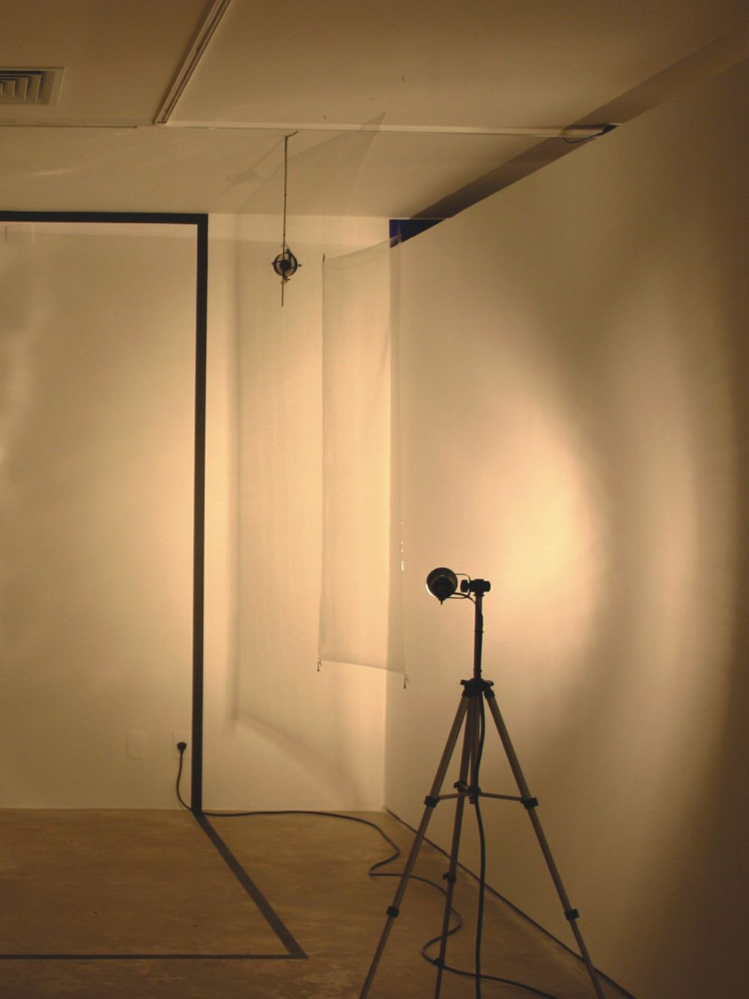
São João Beuys
1990 — do livro Instalações Barja
Textos que falam desta instalação
isso ele se apropria de ícones e mitos, textos e objetos, conceitos e saberes; artistas e profetas, poetas e pensadores são também convocados. São como caracteres a serem recombinados nesta vasta e mundana biblioteca. Ele os seleciona e os associa de modo improvável, por vezes risíveis, que desvelam as arbitrariedades dos signos e dos discursos, os pontos cegos que sempre sobressaltaram as artes, as ilegibilidades que as assombraram. Referências que a princípio nos pareceriam díspares vão sendo suturadas, pro- duzindo novos sentidos, outros abismos. João Batista encontra-se com outro João, o Beuys; o sol /olho de Goethe transforma-se na quinta nota musical da escala dó maior, sol, abrindo-se ao ouvido; o olho, órgão privilegiado do conhe- cimento e da transcendência vertical (do sol de Platão à luz divina) converte-se no olho-ânus de Bataille. No intervalo entre o visível e o invisível, o dito e o silenciado, a revelação e a cegueira, a linguagem e o mundo, os nexos usuais são rompi- dos. Um intervalo que acolhe as opacidades para abrir a arte aos encontros ilimitados, mas que não cessa de confidenciar sua indeterminação e seus desajustes. Vemos por enigmas, ouvimos por dis- sonânc
Catálogo Experiência Tumulto III — pág. 8FOTO Daniel Mira SÃO JOÃO BEUYS 1993
Catálogo Experiência Tumulto III — pág. 30FOTOS Daniel Mira SÃO JOÃO BEUYS - Uma irônica e lúcida associa- ção entre as travessias de São João e Beuys: am- bos profetas no deserto, anunciando uma men- sagem cujo significado completo, só no futuro, em função dos acontecimentos posteriores, tem sentido. A eleição de Beuys para destacar a di- ficuldade da transmissão da arte na moderni- dade é, realmente, apropriada. Como diz Angel González: “uma peça de Duchamp produz inter- pretações, uma de Matisse, produz sensações. Porém, uma imagem de Beuys produz novas imagens, como se às imagens de Beuys lhes fal- tara algo: estiveram incompletas. Não se trata pois ou não me pa
Catálogo Experiência Tumulto III — pág. 31CULTURA X NATUREZA = BAR- BÁRIE - O animal é alheio por excelência, o outro realmente incompreensível. A equação parece concluída: “Cultura X Natureza = Barbárie” (1997 -2004). Ao final, dois elemen- tos incompatíveis, provocam a destruição. De certa for- ma o artista parece colocar, diante de nossos olhos, o ne- gativo do sonho romântico que representava Beuys, sua confiança na possibilidade de utilizar a energia dos ani- mais por alcançar a unidade desejada que já, muito antes, havia anunciado, por exem- plo, Schiller quando invejava a proximidade dos gregos com a natureza: “são o que nós fo- mos; são o que devemos vol- tar a ser. Temos sido natureza como eles, e nossa cultura deve retornar pelo caminho da razão e da liberdade à na- tureza”. Mercedes Replinger González - extraído do livro Instalações Barja - 2005; do texto“Documentos in- certos no lugar do monstro”. CULTURE X NATURE = BARBA- RISM - Animals are foreign par excellence, the truly inc
Catálogo Experiência Tumulto III — pág. 44myths, texts and objects, concepts and bodies of knowledge. Artists and pro- phets, thinkers of the art and the world, are also summoned. They are characters to be recombined in this vast and munda- ne library. He selects them and associates them in improbable connections, at times laughable parodies that show the arbitra- riness of signs and discourses, the blind spots that always take the arts by assault, the illegibilities that haunt them. Referen- ces that initially seemed odd to us start being stitched, connected, producing new meanings, new abysses. John the Baptist meets another John, Beuys; the sun/ eye of Goethe turns into the fifth musical note of the C scale ope- ning itself to the ears; the eye, knowled- ge’s and vertical transcendence’s privile- ged organ (from Plato’s sun to the divine light) converts into Bataille’s anus-eye. In the interval between visible and invisible, what is said and what is silenced, revela- tion and blindness, language and world, the usual nexus is ruptured. An interval that receives the opacities in order to open art to unlimited encounters, but that does not stop revealing its indeterminations and misfits. We see through enigmas, hear throug
Catálogo Experiência Tumulto III — pág. 105s trabalhos de Barja, uma série de teóricos e artistas brasileiros e europeus: Evgene Bavcar, Mercedes Replinger, Adolfo Montejo Navas, Roland Campos, Angélica Madeira, Bené Fonteles e Marília Panitz produziram um conjunto importante de reflexões que acompanham esta compilação de registros que sobreviveram ao tempo. É possível, desse modo, aqui percorrer vinte anos de história por meio dos projetos e das instalações: “Experiência Tumulto (1985)”, “Cubo Cruz Lápide (1985)”, “O Profeta e a Jaguatirica (1985-86)”, “DO AKD-MICO AO POLE-MICO (1986)”, “Mognus Dei (1990)”, “O Sol de Goethe (1999)”, “São João Beuys (1990)”, “Ser ou não Ser, Ao Gullar (1993)”, “Pega Manet/De Onde Vem A Escuridão (1986)”, “TV Anal (1999)”, “Hermógenes (1999)”, “Obranome (2003)” e “Cultura X Natureza = Barbárie (1998/2005)” Marília Panitz, em seu texto “Ao que importa, uma resposta”, propõe um itinerário de leitura das obras de Barja, a partir do conceito de equação, tão caro ao artista. Nos “enigmas de equações visuais” dos comentários-construções de Barja, a autora destaca a condensação de sentidos que tem como ferramenta o humor. Apropriando-se do aço pontiagudo da ironia, munido de um riso de inspiração o
Livro Instalações Barja — pág. 5estrategicamente, no vórtice do cruzeiro o termo latino Magnus Dei, assim, a armadilha obranome de Barja, encontra-se “pronta para mexer com a imagética da consciência do branco visitante do espaço cultural”. Angélica Madeira, ao comentar a instalação “São João Beuys”, atenta para a infinidade de associações e sentidos existentes entre os imortais e carismáticos agitadores políticos que foram São João Batista e Joseph Beuys. Angélica Madeira destaca a influência do surrealismo e do dadá nesta obra em que convivem o lúdico, de um humor supostamente despretensioso, e a gravidade dos materiais, sobretudo da gordura de carneiro que, sob a ação da luz, solidifica-se e liquefaz-se ao longo do dia, causando estranheza e inquietação. Eygene Bavcar, cego aos onze anos de idade, põe-se “`a escuta de uma pintura” e mergulha no universo de “Hermógenes” e de “O Sol de
Livro Instalações Barja — pág. 6a das “Armadilhas Indígenas”, de Bené Fonteles: é o seu Mognos Dei, mais uma obranome que brinca de confundir referências e inscreve seu nome com a farinha de trigo da hóstia, matéria prima metaforizada na prática cristã, cujo ritual pressupõe a deglutição do corpo do Cristo. O que nos leva a uma outra referência certamente associada a “prática antropofágica” das tantas letras... àquela cabeceira sem cama do “DA²”, como equação e operação metonímica, uma declaração de filiação ideológica. Um Joseph, animal religioso: Desafiado a propor sua versão sobre o olhar contemporâneo em torno de Joseph Beuys, Barja propôs uma outra caixa/bicho, ou um tabernáculo zoomorfizado (talvez radicalizando a metaforização do termo que nomeia este pequeno altar portátil, dando-lhe a acepção de corpo como lugar protetor da alma). Seu interior é uma cuba dourada deslocada da função original de instrumento de barbear receptáculo de gordura de carneiro. Exposta à luz, ela apresenta as variações de estado da matéria orgânica (entre sólido e líquido, dependendo do calor e da incidência da luz). mognus dei pega manet pega monet DA
Livro Instalações Barja — pág. 8formar séries e contextos intelectuais”. (...) O conceito é uma fórmula, pura e simples; sua ornamentação (uma expansão devida aos materiais adicionais) transforma a fórmula em imagem uma forma acabada. Exatamente assim, embora em sentido contrário, como um processo de pensamento primitivo o pensamento imagístico, deslocado até um ponto definido, acaba-se transformando em raciocínio conceitual. Eisenstein, Serguei, "O princípio cinematográfico e o ideograma", In, Campos, Haroldo de, Ideograma - lógica, poesia e linguagem, p. 149-166. deitado eternamente H O monet márcia X c/ m.duchamp DA fike são joão beuys expressosionista
Livro Instalações Barja — pág. 11uma história; também, uma linguagem que incontestavelmente nos fala. Nos aproximaremos da obra de Wagner Barja precisamente através desse olhar, que é um escutar por meio de um itinerário traçado por algumas obras e instalações concretas que, entre outros temas, inter relacionam-se por certos aspectos: o problema da visibilidade e da invisibilidade da obra, desde as metáforas da luz até as da cegueira; a passagem da imagem e do texto ao objeto. Por último, as homenagens explícitas ao seu passado cultural e artístico, do qual sente herdeiro, em conflito. Desde Ferreira Gullar, Lygia Clark, J. Beuys até Aleijadinho; ou seja, segue um trajeto das vanguardas às raízes próprias do barroco brasileiro. Essa divisão não implica separação estrita, pois todos esses temas e conceitos aparecem em maior ou menor medida, em cada uma das peças e instalações, que representam em si mesmas um excesso e um resíduo, que se desdobra na obra seguinte e gera um processo contínuo de metamorfoses, e assim sublinhando o caráter aberto da criação artística. Olhar, nesse sentido, implica necessariamente teorizar, gerar um pensamento que se constrói com o próprio movimento dos olhos. Como já assinalara Goethe:
Livro Instalações Barja — pág. 13
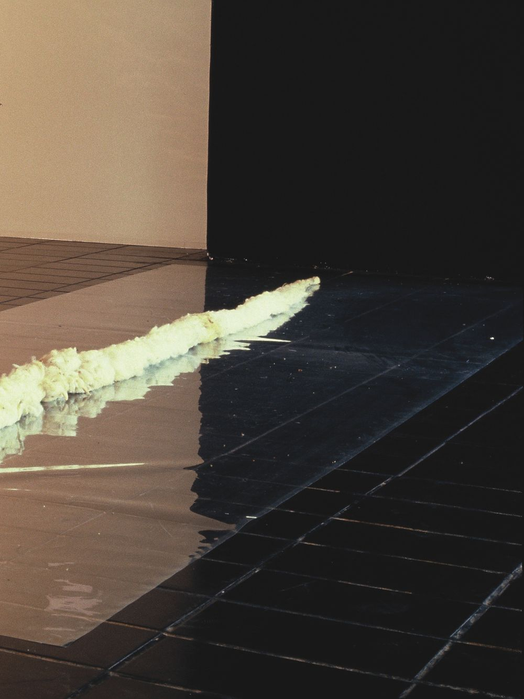
Jardim de Bengalas
1997/98 — do livro Instalações Barja
Textos que falam desta instalação
opõe Descartes quando assinala que a câmara escura era a demonstração de como um observador pode conhecer o mundo unicamente pela percepção da mente. O filósofo, como o cego, pode também captar e recorrer a um mundo suscetível de ser analisado, captado pelo espírito; por um terceiro olho interior que descobre uma perfeita correspondência entre o mundo exterior o mundo interior, sem necessidade de ver diretamente. Assim, na escuridão que rodeia e que separa do mundo, fecharei os olhos, deterei meus ouvidos, prestarei atenção em meus sentidos(16). A cegueira, como a expõe Barja nesta hermógenes jardim de bengalas
Livro Instalações Barja — pág. 16jardim de bengalas - 1997/8
Livro Instalações Barja — pág. 63jardim de bengalas - 1999/00
Livro Instalações Barja — pág. 78ings at the spiritual level with an internal third eye whose discovery of the perfect link between inside and outside worlds requires no direct seeing. Surrounded by darkness, separated from the world, I will now close my eyes and cover my ears, I will pay attention to my senses. Blindness, as portrayed by Wagner Barja in this and other similar thematic works, presupposes a link with a metaphysics of inwardness,wherein reality appears as a dark and magical space inhabited by shadows, clearly distinguished from the image developed in Hermogenes (1999), which answers perfectly to the hermógenes garden of canes
Livro Instalações Barja — pág. 96


Agulha no Palheiro
1998 — do livro Instalações Barja
Textos que falam desta instalação
FOTO Daniel Mira AGULHA NO PALHEIRO para nivelar visibilidades 1999 AGULHA NO PALHEIRO: Para nivelar visibilidades - Presença e ausência, distanciamento e proximidade. Por um instante que pode ser uma eternidade, visão e cegueira ficam iguala- dos ante a dificuldade de se encontrar algo olhando. Mercedes Replinger González - ex- traído do livro Instalações Barja - 2005. NEEDLE IN THE HAYSTACK: Equalizing visibilities - Pres- ence and absence, distance and proximity. For an instant that may feel like eternity, blindness and sight attain equality before the difficulty of finding something with the sight. Mercedes Replinger Gonzál
Catálogo Experiência Tumulto III — pág. 33ue declinam os distintos tipos de representação: realismo, hiper realismo, realismo fantástico, são expostas, deslizando-se desordenadamente por uma tábua, como aquelas onde se exibem mercadorias, envolvendo com seus sons a figura do profeta Oséias que quer dizer salvação realizada pelo escultor Aleijadinho cuja sombra delimita o contorno, a sombra estatelada de uma Jaguatirica. Todo o conjunto coberto por penas como um manto. Uma peça que, não por casualidade, adota o formato de um autêntico retábulo como caixa de ressonância para interpretar os sinais, os indícios que orientam uma tradição. agulha no palheiro TV anal
Livro Instalações Barja — pág. 22ista colocou uma tv que só emite chuva ou neve, nenhuma imagem, só luz e uma lente de aumento, ridícula, pois não se vê nada. 9. Ibidem, p. 46 10. Mircea Eliade: História de las creencias y de las ideas religiosas III/1. Madrid, ed. Cristiandad, 1983. Pág. 152 y ss. 11. Jonathán Crary: Modernización de la visión en Poéticas del espacio. Barcelona, ed. Gustavo Gili, 2002, p.133. p.136 12. Barja valoriza a importância do entrelaçamento de luz e sombra, presença e ausência, distanciamento e proximidade. Por isso em muitas de suas obras esta ambígua realidade se dá constantemente, por exemplo, em Agulha no Palheiro (1988-89), onde o espectador deve encontrar entre o monte de palha, uma agulha de ouro, remetendo a um conhecido refrão que assinala a dificuldade de encontrar algo, como a agulha no palheiro. Uma agulha que efetivamente existe está sendo retransmitida por um aparelho. Nesta peça é indiferente ser vidente ou não, só através do tato é possível encontrar-la. A peça precisamente se intitula, instalação para nivelar visibilidades. Por um instante que pode ser uma eternidade, visão e cegueira ficam igualados ante a dificuldade de se encontrar algo olhando. 13. Jacques Derrida: Mé
Livro Instalações Barja — pág. 28agulha no palheiro - 1998
Livro Instalações Barja — pág. 65

Sol de Goethe
1999/00 — do livro Instalações Barja
Textos que falam desta instalação
de ícones e mitos, textos e objetos, conceitos e saberes; artistas e profetas, poetas e pensadores são também convocados. São como caracteres a serem recombinados nesta vasta e mundana biblioteca. Ele os seleciona e os associa de modo improvável, por vezes risíveis, que desvelam as arbitrariedades dos signos e dos discursos, os pontos cegos que sempre sobressaltaram as artes, as ilegibilidades que as assombraram. Referências que a princípio nos pareceriam díspares vão sendo suturadas, pro- duzindo novos sentidos, outros abismos. João Batista encontra-se com outro João, o Beuys; o sol /olho de Goethe transforma-se na quinta nota musical da escala dó maior, sol, abrindo-se ao ouvido; o olho, órgão privilegiado do conhe- cimento e da transcendência vertical (do sol de Platão à luz divina) converte-se no olho-ânus de Bataille. No intervalo entre o visível e o invisível, o dito e o silenciado, a revelação e a cegueira, a linguagem e o mundo, os nexos usuais são rompi- dos. Um intervalo que acolhe as opacidades para abrir a arte aos encontros ilimitados, mas que não cessa de confidenciar sua indeterminação e seus desajustes. Vemos por enigmas, ouvimos por dis- sonâncias. É esse lugar for
Catálogo Experiência Tumulto III — pág. 8O SOL DE GOETHE 1997
Catálogo Experiência Tumulto III — pág. 35O SOL DE GOETHE - Goethe estabelece a ana- logia entre o olho e o sol (...) na introdução de sua conhecida Farbenlehre (“Teoria das cores”), de 1810. A partir das teorias da visão do mundo antigo, ele não cansava de dizer e repetir que só o afim pode conhecer o afim e não há quem ne- gue essa afinidade direta do olho e da luz; assim como as palavras de um antigo místico, que em rimas alemães, podem ser assim expressas: Se o olho não tivesse sol, Como veríamos a luz? Sem a força de Deus vivendo entre nós, Como o divino nos seduz? O poeta alemão faz eco com a tradição grega que, desde Empédocles, via certa ana
Catálogo Experiência Tumulto III — pág. 36ts, concepts and bodies of knowledge. Artists and pro- phets, thinkers of the art and the world, are also summoned. They are characters to be recombined in this vast and munda- ne library. He selects them and associates them in improbable connections, at times laughable parodies that show the arbitra- riness of signs and discourses, the blind spots that always take the arts by assault, the illegibilities that haunt them. Referen- ces that initially seemed odd to us start being stitched, connected, producing new meanings, new abysses. John the Baptist meets another John, Beuys; the sun/ eye of Goethe turns into the fifth musical note of the C scale ope- ning itself to the ears; the eye, knowled- ge’s and vertical transcendence’s privile- ged organ (from Plato’s sun to the divine light) converts into Bataille’s anus-eye. In the interval between visible and invisible, what is said and what is silenced, revela- tion and blindness, language and world, the usual nexus is ruptured. An interval that receives the opacities in order to open art to unlimited encounters, but that does not stop revealing its indeterminations and misfits. We see through enigmas, hear through dissonances. It is t
Catálogo Experiência Tumulto III — pág. 105xão-diálogo. A partir dos trabalhos de Barja, uma série de teóricos e artistas brasileiros e europeus: Evgene Bavcar, Mercedes Replinger, Adolfo Montejo Navas, Roland Campos, Angélica Madeira, Bené Fonteles e Marília Panitz produziram um conjunto importante de reflexões que acompanham esta compilação de registros que sobreviveram ao tempo. É possível, desse modo, aqui percorrer vinte anos de história por meio dos projetos e das instalações: “Experiência Tumulto (1985)”, “Cubo Cruz Lápide (1985)”, “O Profeta e a Jaguatirica (1985-86)”, “DO AKD-MICO AO POLE-MICO (1986)”, “Mognus Dei (1990)”, “O Sol de Goethe (1999)”, “São João Beuys (1990)”, “Ser ou não Ser, Ao Gullar (1993)”, “Pega Manet/De Onde Vem A Escuridão (1986)”, “TV Anal (1999)”, “Hermógenes (1999)”, “Obranome (2003)” e “Cultura X Natureza = Barbárie (1998/2005)” Marília Panitz, em seu texto “Ao que importa, uma resposta”, propõe um itinerário de leitura das obras de Barja, a partir do conceito de equação, tão caro ao artista. Nos “enigmas de equações visuais” dos comentários-construções de Barja, a autora destaca a condensação de sentidos que tem como ferramenta o humor. Apropriando-se do aço pontiagudo da ironia, munido de
Livro Instalações Barja — pág. 5Beuys”, atenta para a infinidade de associações e sentidos existentes entre os imortais e carismáticos agitadores políticos que foram São João Batista e Joseph Beuys. Angélica Madeira destaca a influência do surrealismo e do dadá nesta obra em que convivem o lúdico, de um humor supostamente despretensioso, e a gravidade dos materiais, sobretudo da gordura de carneiro que, sob a ação da luz, solidifica-se e liquefaz-se ao longo do dia, causando estranheza e inquietação. Eygene Bavcar, cego aos onze anos de idade, põe-se “`a escuta de uma pintura” e mergulha no universo de “Hermógenes” e de “O Sol de Goethe”. Bavcar interessa-se sobretudo pela bengala branca, um dos objetos que compõe “Hermógenes”; ela se torna “a tela invisível, a pintura a ser criada (...) o pincel sobre as trevas”. O que Barja pinta, ao compor o espaço, é o “caminho difícil do invisível” penetrável, talvez, pelas formas que o artista formula. Mercedes Replinger, juntamente com Marília Panitz, é quem se debruça sobre o conjunto da obra de Wagner Barja. Replinger situa a obra de Barja não só em relação às reflexões da crítica contemporânea brasileira especialmente Ferreira Gullar, a quem Barja brilhantemente respond
Livro Instalações Barja — pág. 6stas propunham, com uma performance de Márcia X e Alex Hamburger, era levar a catalogação do mundo feita por um carroceiro catador, para dentro do espaço da arte [2]. Na sua segunda versão, articulada com as obras para Hermógenes, essa experiência era vista “de fora” protegida por um véu (como re-visão da primeira e como antevisão da outra subversão, a da arte visual para quem não vê). Bengalas-pincel e bengalas-signos, objetos submersos, escrituras invisíveis, a Agulha-no-Palheiro (cujo subtítulo é “para nivelar visibilidades”) transmitida por uma tv-no-palheiro, a bacia-instrumento sonoro “ Sol de Goethe”, a Medusa, com suas bengalas/lâminas que furam a íris de um olho, a reafirmar por outra via a maldição do mito, ou o enorme cobertor negro, com inscrições em braile bordadas com pérolas, seu Livro de Barriga. Entre os objetos pertencentes à segunda experiência, há a cadeira ao que importa, uma resposta Marília Panitz
Livro Instalações Barja — pág. 7k, J. Beuys até Aleijadinho; ou seja, segue um trajeto das vanguardas às raízes próprias do barroco brasileiro. Essa divisão não implica separação estrita, pois todos esses temas e conceitos aparecem em maior ou menor medida, em cada uma das peças e instalações, que representam em si mesmas um excesso e um resíduo, que se desdobra na obra seguinte e gera um processo contínuo de metamorfoses, e assim sublinhando o caráter aberto da criação artística. Olhar, nesse sentido, implica necessariamente teorizar, gerar um pensamento que se constrói com o próprio movimento dos olhos. Como já assinalara Goethe: “O mero olhar as coisas, a nada conduz. Todo olhar se transforma em considerar; todo considerar se transforma em meditar; todo meditar em relacionar; por isso pode-se dizer que basta olharmos com um pouco de atenção para já estarmos em plena atividade teorizante” (1). Olhar com atenção é, pois, também escutar, visto que o olhar que pensa, sem dúvida, fala e escuta; assim produz um jogo interminável de intercâmbios entre a visão e o ouvido, entre as palavras que se vêem e as imagens que ouvem. Reciprocidade dos sentidos, das imagens e das palavras, também dos sentimentos e dos lugares.
Livro Instalações Barja — pág. 13mente por causa delas, podemos contemplar o mundo como uma totalidade, que se desprende em múltiplas metamorfoses. Um sonho, porém, a beleza da metáfora, a luz como som, permite a Barja rebaixar o tom de visibilidade desta instalação, deslocando a intensidade da percepção visual à acústica. O som, sem dúvida, é a qualidade mais desligada do objeto e de sua representação, aquela que mantém uma distância maior a respeito da visibilidade, igualando, situando, num mesmo nível, videntes e não-videntes. Literalmente o artista está pleiteando a abertura no espaço plástico de uma música ocular. Em “O Sol de Goethe” (1990) há, ainda, um limite para a visibilidade que se dá por outra correspondência também inscrita no título: a analogia que Goethe estabelece entre o olho e o sol, como apresenta na introdução de sua conhecida Farbenlehre (teoria das cores), de 1810. A partir das teorias da visão do mundo antigo, não cansava de dizer e repetir que só o afim pode conhecer o afim e não há quem negue essa afinidade direta do olho e da luz; assim como as palavras de um antigo místico, em verso alemão, pode-se expressar da seguinte maneira: “Se não fosse o olho da progênese do Sol como poderíamos d
Livro Instalações Barja — pág. 14Goethe; inclusive, foi mais longe e imaginou a existência no ser humano de um olho específico para contemplar o sol: o olho pineal, glândula situada abaixo da caixa craniana que, diferentemente dos olhos surpreendidos na horizontalidade do devir cotidiano, do que se oferece ao olhar, permite-nos levantar e ver o sol cara a cara, como a águia dos antigos. O olho pineal é, para Bataille, a confirmação do afã do ser humano de elevar-se acima de sua condição terrena. Esse incontido desejo de ver o sol cara a cara marcaria, segundo o autor francês, a evolução do homem de sua posição inclinada, quadrúpede
Livro Instalações Barja — pág. 15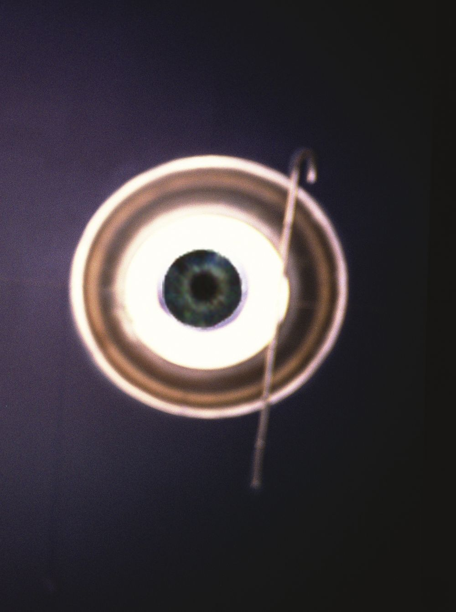
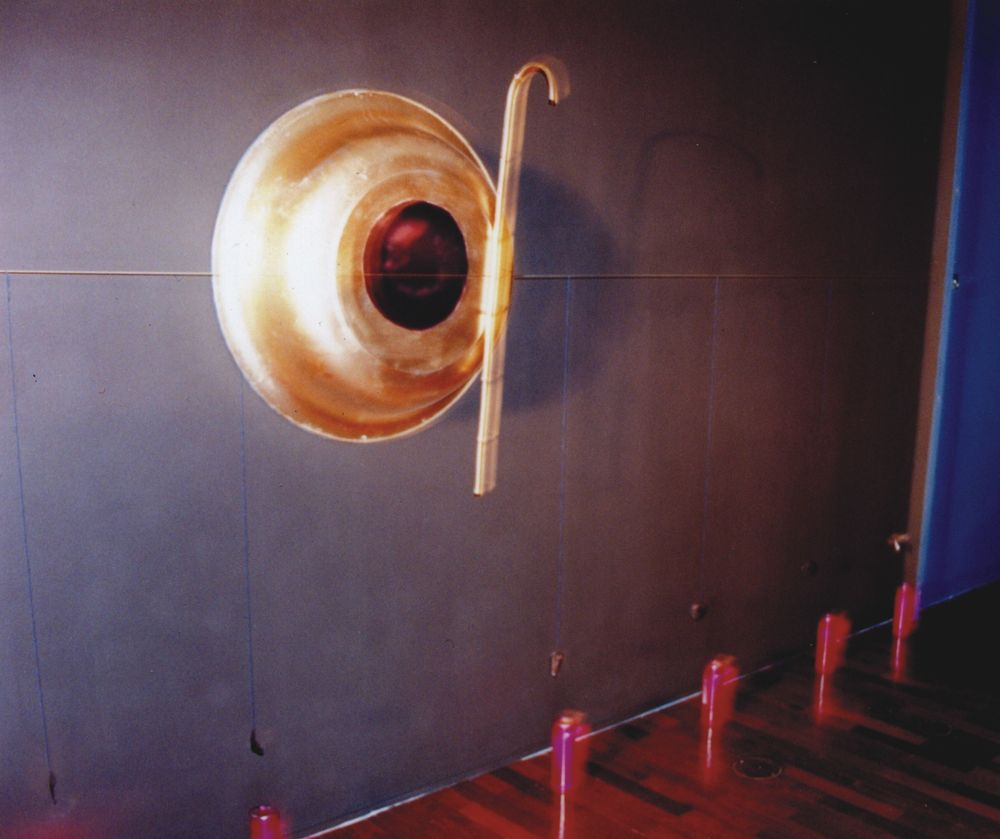
Cegomóvel Hermógenes
1999/00 — do livro Instalações Barja
Textos que falam desta instalação
tejo Navas, Roland Campos, Angélica Madeira, Bené Fonteles e Marília Panitz produziram um conjunto importante de reflexões que acompanham esta compilação de registros que sobreviveram ao tempo. É possível, desse modo, aqui percorrer vinte anos de história por meio dos projetos e das instalações: “Experiência Tumulto (1985)”, “Cubo Cruz Lápide (1985)”, “O Profeta e a Jaguatirica (1985-86)”, “DO AKD-MICO AO POLE-MICO (1986)”, “Mognus Dei (1990)”, “O Sol de Goethe (1999)”, “São João Beuys (1990)”, “Ser ou não Ser, Ao Gullar (1993)”, “Pega Manet/De Onde Vem A Escuridão (1986)”, “TV Anal (1999)”, “Hermógenes (1999)”, “Obranome (2003)” e “Cultura X Natureza = Barbárie (1998/2005)” Marília Panitz, em seu texto “Ao que importa, uma resposta”, propõe um itinerário de leitura das obras de Barja, a partir do conceito de equação, tão caro ao artista. Nos “enigmas de equações visuais” dos comentários-construções de Barja, a autora destaca a condensação de sentidos que tem como ferramenta o humor. Apropriando-se do aço pontiagudo da ironia, munido de um riso de inspiração oswaldiana, o antropófago Barja, sob uma “forte influência do movimento neoconcreto” compõe um conjunto de instalações em que
Livro Instalações Barja — pág. 5instalação “São João Beuys”, atenta para a infinidade de associações e sentidos existentes entre os imortais e carismáticos agitadores políticos que foram São João Batista e Joseph Beuys. Angélica Madeira destaca a influência do surrealismo e do dadá nesta obra em que convivem o lúdico, de um humor supostamente despretensioso, e a gravidade dos materiais, sobretudo da gordura de carneiro que, sob a ação da luz, solidifica-se e liquefaz-se ao longo do dia, causando estranheza e inquietação. Eygene Bavcar, cego aos onze anos de idade, põe-se “`a escuta de uma pintura” e mergulha no universo de “Hermógenes” e de “O Sol de Goethe”. Bavcar interessa-se sobretudo pela bengala branca, um dos objetos que compõe “Hermógenes”; ela se torna “a tela invisível, a pintura a ser criada (...) o pincel sobre as trevas”. O que Barja pinta, ao compor o espaço, é o “caminho difícil do invisível” penetrável, talvez, pelas formas que o artista formula. Mercedes Replinger, juntamente com Marília Panitz, é quem se debruça sobre o conjunto da obra de Wagner Barja. Replinger situa a obra de Barja não só em relação às reflexões da crítica contemporânea brasileira especialmente Ferreira Gullar, a quem Barja b
Livro Instalações Barja — pág. 6ados, uma operação de desmanche da obra na sua própria construção (ela está ali, precária, na iminência de se desfazer por comportar o que não pode ocupar o mesmo lugar água e eletricidade, já que a imagem submersa se mostra em telas de tv). Essas caixas-aquários, que portam outras caixas (aquário?) produzem sua própria equação que o artista formula como natureza X cultura = barbárie , sua própria formulação da circularidade: quem olha quem? Quem é o referente? Onde a proposta começa? E esta não é a equação sem resposta produzida pela arte, no mínimo a partir de Velasquez? Os olhos opacos do “Hermógenes”: A história de ser apresentado ao mundo por um avô cego pode implicar no costume de “adivinhar a visão” ou de exercitá-la com os olhos fechados, reinventando o mundo. A história de relembrar o mundo (pela leitura) a um avô cego pode implicar em reelaboração das coisas pela palavra, em uma certa sujeição da realidade a uma outra ordem (também) imaginária. Os trabalhos de Barja em torno da metáfora da cegueira, que se apresentaram em conjunto em vários lugares [1] e com diferentes configurações, levam o nome de uma experiência anterior a “Experiência Tumulto” o transplante da rua par
Livro Instalações Barja — pág. 7ila humana; fotografias de um eclipse da coroa solar mostram também a imagem de uma escuridão impenetrável rodeada pela luz das chamas da atmosfera solar. Todas estas figuras apresentam esta mesma coincidência: a luz e a visão surgem de um centro cego. Todas elas manifestam, como na chama, que qualquer efeito luminoso em um centro escuro, é opaco em seu interior. Como se fora consubstancial à luz sua negação ou sua relação inevitável com seu oposto. Como diria Derrida, a hipótese da vista passa, na realidade, pelo cancelamento do olhar, sua époché, ou seja, sua interrupção ou suspensão (13). “Hermógenes” (1999) fala-nos dessa interrupção da visão. Dedicada a seu avô cego, essa instalação converte-se em uma câmara escura envolta por telas negras onde o espectador só pode caminhar com a ajuda de um
Livro Instalações Barja — pág. 15econciliar os dois modos de visão possíveis, sobretudo para revalorizar o olhar do terceiro olho. Penso que, desde os gregos, ele foi esquecido ou ocultado pelo progresso de uma visão que pretende tudo ver, sem nada saber ou sem representar para si mesma o que viu” (15). O cego pode atravessar as imagens, a realidade que nos rodeia e encontrar, nessa viagem pela escuridão, outras figuras, outras expressões que estariam mais perto do substrato mítico e originário do mundo. Na cavidade escura de seu próprio corpo, os cegos e os espectadores que, temporariamente cegos, transitam pela instalação “Hermógenes” (1999) podem pegar a luz e desenhar no seu interior figuras, outras formas que aparecem em estreita relação com o imaginário noturno. O espectador reproduz, então, um processo autônomo de gestação de imagens que não está necessariamente mediatizado pelo olhar. De fato, a cegueira imposta em “Hermógenes” (1999) apresenta-se como um modelo de pensamento, em um sentido muito similar ao que propõe Descartes quando assinala que a câmara escura era a demonstração de como um observador pode conhecer o mundo unicamente pela percepção da mente. O filósofo, como o cego, pode também captar e
Livro Instalações Barja — pág. 16obra e em outras sobre o mesmo tema, supõe um vínculo com uma metafísica da interioridade ao representar a realidade num espaço escuro e mágico, habitado por sombras que a diferenciam da imagem desenvolvida por “Hermógenes” (1999) responde perfeitamente à ilusão de se criar uma imagem em que a realidade objetiva e a imaginação interior forjam um mesmo espaço, impondo aos espectadores que literalmente colocam-se no lugar do cego que habita, por um momento, o fundo imaginário de brilhante escuridão. Por um instante tem uma lanterna mágica como cérebro, ou seja, um mecanismo de projeção e não tanto um procedimento de registro, uma impressão indiferenciada do mundo exterior tutelado pela visão. Caberia perguntar por que o espectador deve ser guiado, por que não se move livremente pelo espaço escuro. Certamente, exi
Livro Instalações Barja — pág. 17precisamente às dobradiças, adotar formas múltiplas, vivas e assimétricas. Uma metamorfose da razão geométrica em biologia por meio da peça que, com o próprio movimento, perfura o espaço e permite a participação direta do público: “integração total, existencial, estabelecida entre ele, o Bicho, e nós, os manipuladores do corpo a corpo entre duas entidades vivas” (20). Sem hesitar, Barja com obranome não apenas recupera a mobilidade da peça, sua concepção biomórfica e participativa mas tenta, também, estabelecer uma relação explícita com a linguagem, ou seja, traçar um laço entre a palavra, a Hermógenes (1999) tumulto cego hermógenes
Livro Instalações Barja — pág. 18cegomóvel hermógenes - 1999/00
Livro Instalações Barja — pág. 69cegomóvel hermógenes - 1999/00
Livro Instalações Barja — pág. 70Hermógenes (1999 possessing an eye specifically designed for contemplating the sun. Called the pineal eye, this gland is situated beneath the cranial crown and, unlike ordinary eyes fixed on the horizontality of day-to- day events available to their sight, permits us to rise up and see the sun face to face, like the eagle of the ancients. For Bataille, the pineal eye confirms the human being’s fervor to transcend his earthly condition. It is this uncontained desire to see the sun face to face that, according to the French author, sets the mark for man’s evolution from a creature bent over on all fours,
Livro Instalações Barja — pág. 95


Medusa
1999/00 — do livro Instalações Barja
Textos que falam desta instalação
m uma performance de Márcia X e Alex Hamburger, era levar a catalogação do mundo feita por um carroceiro catador, para dentro do espaço da arte [2]. Na sua segunda versão, articulada com as obras para Hermógenes, essa experiência era vista “de fora” protegida por um véu (como re-visão da primeira e como antevisão da outra subversão, a da arte visual para quem não vê). Bengalas-pincel e bengalas-signos, objetos submersos, escrituras invisíveis, a Agulha-no-Palheiro (cujo subtítulo é “para nivelar visibilidades”) transmitida por uma tv-no-palheiro, a bacia-instrumento sonoro “ Sol de Goethe”, a Medusa, com suas bengalas/lâminas que furam a íris de um olho, a reafirmar por outra via a maldição do mito, ou o enorme cobertor negro, com inscrições em braile bordadas com pérolas, seu Livro de Barriga. Entre os objetos pertencentes à segunda experiência, há a cadeira ao que importa, uma resposta Marília Panitz
Livro Instalações Barja — pág. 7ão posteriormente reelaborada no renascimento por Plotino. Assim, o tato estaria relacionado com a terra, o ouvido com o ar, a água úmida com o gosto e, por último, o mais luminoso dos sentidos, a visão, com a luz solar. O olho se converte em sol para assim poder refletir o universo. Georges Bataille, com humor corrosivo chamará de paródias essas correspondências e analogias do universo que se fundamentam na ânsia de encontrar a unidade absoluta, o sentido de totalidade do mundo. Porém, ele não renunciou a contribuir com uma metáfora de igual potência àquela de o sol de Goethe o sol de Goethe medusa
Livro Instalações Barja — pág. 14com a obra anteriormente comentada encontra-se na imagem da íris de um cego, de um deficiente visual, como se de novo Barja tentasse deixar constante o rastro inevitável que o desejo de luz projeta no próprio corpo da cegueira. O artista resiste a ocultar as feridas e não renuncia a escrever a história dessa pegada legível que é a memória do cego. Como ele mesmo contou ao artista Evgene Bavcar, fotógrafo cego, pensador que, sem dúvida, sabe escutar: “Aquele dia no Rio se parecia, como por acaso, à brancura e às trevas de suas palavras que me contava o destino de seu avô atingido pelo olhar da medusa. A bengala branca torna-se, assim, a tela invisível, a pintura a ser criada, enquanto que o corpo ferido de seu avô serve de sombra ao olhar que quer se instalar em uma utopia pictural concreta” (14). Uma memória lúgubre que se tecia ao mesmo tempo aos relatos histórias e sucessos que o menino contava a seu avô dos jornais e das novelas que contribuíam para a construção de um mundo imaginário por meio da palavra. A voz se converte, assim, literalmente em um espelho do mundo; nela, o som das palavras traz, para quem escuta, um mundo de flashs, de recordações, de clarões que se imprimem n
Livro Instalações Barja — pág. 16es Pompidou, junio-ocubre 1994, p. 256 47. Goethe: Fausto. Madrid, ed. Cátedra, 1987, p.115. 48. Como mostrar os quadros a uma lebre morta (Galería Schmela de Dusseldorf el 26 de noviembre de 1965 Uwe M. Schneed: Joseph Beuys. Die Aktionen, Gerd Hátje Verlag, Francfor, 1969, p. 103. Citado em Miguel Cereceda: Para aquelas coisas tomem a palavra. Sobre a obra de Joseph Beuys em La estética del nihilismo. Xunta de Galicia, Centro Galego de Arte Contemporânea. 1996, p.105 49. Rainer María Rilke: Elegías de Duino. Madrid, ed. Cátedra, 1993 p. 105 50. São Paulo, Companhia das Letras, 19988, p. 79. medusa
Livro Instalações Barja — pág. 29busca do visível, assim como do invisível. Ele me falava de suas instalações que querem significar as passagens entre suas Charybde(1) e suas Scylla(2). Trata-se de entre-mundos que desaparecem, um após o outro, para deixar o caminho livre a este pintor insatisfeito, recusando ao mesmo tempo o quadrado negro sobre fundo negro e o quadrado branco sobre fundo branco, pois é na interposição dos dois que começam a nascer seus possíveis, suas novas visões. Aquele dia no Rio parecia, como por acaso, a brancura e as trevas de suas palavras que me contavam o destino de seu avô atingido pelo olhar da medusa. A bengala branca torna-se assim a tela invisível, a pintura a ser criada, enquanto que o corpo ferido de seu avô serve de sombra ao olhar que quer se instalar em uma utopia pictural concreta. A bengala branca é o pincel sobre as trevas, igual ao bastão do herói de Moby Dick, um osso de baleia. Compreendi muitas vezes que a pintura moderna tem sempre necessidade de uma cegueira minimalista, seja simbolizada pela lembrança de um próximo, para se engajar sobre o caminho difícil do invisível, para se apoiar sobre a bengala branca daquele que gostaria de aprender a olhar com o terceiro olho.
Livro Instalações Barja — pág. 35medusa - 1999/00
Livro Instalações Barja — pág. 71medusa - 1999/00
Livro Instalações Barja — pág. 73oposal, invoved bringing a garbage picker’s cataloguing of the world into a space designed to receive art In its second version, coordinated with the works developed for Hermogenes, this experience was seen “from the outside”, protected by a veil (as a re-vision of the first and as a premonition of that other subversion, the question of visual art for the sightless) - Paintbrush/canes and sign/canes; submerged objects; invisible writing; the Needle in a Haystack (whose subtitle is "equalizing visibilities"), transmitted by a TV-in-a-haystack; the resonant basin-instrument of Goethe’s Sun; the Medusa, with its razor/canes slicing open the iris of an eye, another form of reaffirming the curse of the myth; or the enormous black blanket with its Braille inscriptions embroidered in pearls, his Belly Book. Among the objects belonging to the second experience, there is a chair designed for watching television with the Bataillean eye, which, located at the other extreme from the pineal eye (each of them blind H2Omonet Marília Panitz getting to the heart of the matter, a response
Livro Instalações Barja — pág. 87Medusa-1999 and darkness with bright or muted sounds, as well as with high or low tones (4). The Greeks, however, viewed the visual and auditory components of an image as convergent. Thus, the idea that celestial spheres, including the sun, are made of bronze alludes not only to their brilliance or incontestable eternal constancy; this bronze actually represents the visual element of the sonorous fabric that makes up the heavens. It is the sound of eternally spiraling astral bodies producing a supremely beautiful melody (5). Along similar lines, Robert Fludd used his model of the monochord (1590) to
Livro Instalações Barja — pág. 94age of a blind man’s iris, as though, once again, Barja wants to preserve the inevitable traces the desire for light projects onto the body of blindness itself. The artist resists hiding wounds and does not recoil from writing the story found in the legible footprint that is the blind man’s memory. As he himself related to blind photographer and thinker Evgen Bavcar, a man with developed listening skills, “that day in Rio seemed to have come about by chance, as I listened to the whiteness and darkness of your words recounting the fate of your grandfather, stricken by the gaze of the Francoist Medusa. The white cane thus became an invisible canvas, a painting to be created, while your grandfather’s wounded body became the shadow of a gaze seeking refuge in a concrete pictorial utopia”(14). A lugubrious memory, interwoven at the same time with another memory of the spoken accounts, mostly stories and successes drawn from newspapers and television dramas, delivered by the young boy to his grandfather, constructing an imaginary world out of words. The voice literally becomes a mirror of the world; the sound of the words reflects back to the listener a universe of flashes, memories, epi
Livro Instalações Barja — pág. 96


TV Anal
1999/00 — do livro Instalações Barja
Textos que falam desta instalação
TV ANAL - Georges Bataille (...) imaginou a exis- tência no ser humano de um olho específico para contemplar o sol: o olho pineal, glândula situada abaixo da caixa craniana que, diferen- temente dos olhos surpreendidos na horizon- talidade do devir cotidiano, do que se oferece ao olhar, permite-nos levantar e ver o sol cara a cara, como a águia dos antigos. O olho pine- al é, para Bataille, a confirmação do afã do ser humano de elevar-se acima de sua condição terrena. Esse incontido desejo de ver o sol cara a cara marcaria, segundo o autor, a evolução do homem de sua posição inclinada, quadrúpede, pr
Catálogo Experiência Tumulto III — pág. 38linger, Adolfo Montejo Navas, Roland Campos, Angélica Madeira, Bené Fonteles e Marília Panitz produziram um conjunto importante de reflexões que acompanham esta compilação de registros que sobreviveram ao tempo. É possível, desse modo, aqui percorrer vinte anos de história por meio dos projetos e das instalações: “Experiência Tumulto (1985)”, “Cubo Cruz Lápide (1985)”, “O Profeta e a Jaguatirica (1985-86)”, “DO AKD-MICO AO POLE-MICO (1986)”, “Mognus Dei (1990)”, “O Sol de Goethe (1999)”, “São João Beuys (1990)”, “Ser ou não Ser, Ao Gullar (1993)”, “Pega Manet/De Onde Vem A Escuridão (1986)”, “TV Anal (1999)”, “Hermógenes (1999)”, “Obranome (2003)” e “Cultura X Natureza = Barbárie (1998/2005)” Marília Panitz, em seu texto “Ao que importa, uma resposta”, propõe um itinerário de leitura das obras de Barja, a partir do conceito de equação, tão caro ao artista. Nos “enigmas de equações visuais” dos comentários-construções de Barja, a autora destaca a condensação de sentidos que tem como ferramenta o humor. Apropriando-se do aço pontiagudo da ironia, munido de um riso de inspiração oswaldiana, o antropófago Barja, sob uma “forte influência do movimento neoconcreto” compõe um conjunto de
Livro Instalações Barja — pág. 5intos tipos de representação: realismo, hiper realismo, realismo fantástico, são expostas, deslizando-se desordenadamente por uma tábua, como aquelas onde se exibem mercadorias, envolvendo com seus sons a figura do profeta Oséias que quer dizer salvação realizada pelo escultor Aleijadinho cuja sombra delimita o contorno, a sombra estatelada de uma Jaguatirica. Todo o conjunto coberto por penas como um manto. Uma peça que, não por casualidade, adota o formato de um autêntico retábulo como caixa de ressonância para interpretar os sinais, os indícios que orientam uma tradição. agulha no palheiro TV anal
Livro Instalações Barja — pág. 22nt' uns Göttliches entzücken ? Devo a tradução que utilizo á amabilidade do poeta David Pujante. 8. Georges Bataille: El ojo pineal. Valencia, ed. Pre-Textos, 1997, p. 65? . Bataille que encontrava correspondencias entre todas as coisas do universo como parodias, via este olho pineal em estreita relação com o ano. Ano Solar se chama precisamente um texto de 1927: representava o olho numa parte superior do crânio como um horrível vulcão em erupção, precisamente com um caráter confuso e cômico, que se associa ao traseiro e suas excreções. Uma analogia que se projeta em outra peça de Barja, como TV Anal (1999), onde o assento de uma cadeira, o artista colocou uma tv que só emite chuva ou neve, nenhuma imagem, só luz e uma lente de aumento, ridícula, pois não se vê nada. 9. Ibidem, p. 46 10. Mircea Eliade: História de las creencias y de las ideas religiosas III/1. Madrid, ed. Cristiandad, 1983. Pág. 152 y ss. 11. Jonathán Crary: Modernización de la visión en Poéticas del espacio. Barcelona, ed. Gustavo Gili, 2002, p.133. p.136 12. Barja valoriza a importância do entrelaçamento de luz e sombra, presença e ausência, distanciamento e proximidade. Por isso em muitas de suas obras esta ambí
Livro Instalações Barja — pág. 28TV anal - 1999/00
Livro Instalações Barja — pág. 74TV anal - 1999/00
Livro Instalações Barja — pág. 75


Caverna
1999/00 — do livro Instalações Barja
Textos que falam desta instalação
caverna - 1999/00 1-
Livro Instalações Barja — pág. 77termodinâmicos/caverna - 1999/00
Livro Instalações Barja — pág. 79


Cultura x Natureza = Barbárie
1998/04 — do livro Instalações Barja
Textos que falam desta instalação
r Bar- ja esteja fora da poesia visual, se deve inscrever nas suas coordenadas de olhar expandido grande parte de seus trabalhos. Sobretudo aqueles nos quais a nomenclatura faz parte da obra, o seu no- mear está em função determinante, num triân- gulo de potências verbais, conceituais e visuais. São vários os trabalhos então, que passam a funcio- nar com o elemento verbo-visual ativado, gerando um campo plural de forças estéticas, onde até o ter- ritório da sensorialidade é produzido por contigüi- dade conceitual e reflexiva. Assim o conjunto de Da², H2O Monet, Fike e até Natureza X Cultura = Barbárie se aproxima. Neles, a conversa submersa que se es- tabelece e visa certa infinitude, numa escrita (“esse jogo insensato de escrever”, como diria Blanchot), que aqui aposta também numa simultaneidade de linguagem. A própria idéia de “Obranome”, (motivo de curadoria e obra), está nessa freqüência não redu- cionista. Barja veicula uma corrente de pensamento que não quer repousar na anestesia retiniana, nesse sentido, não deixa de ser um sintoma, que o artista tenha orientado-se para alguns trabalhos sobre a cegueira, como para uma investigação da transpa- rência, e assim procurar outra i
Catálogo Experiência Tumulto III — pág. 41CULTURA X NATUREZA = BARBÁRIE 1997
Catálogo Experiência Tumulto III — pág. 43CULTURA X NATUREZA = BAR- BÁRIE - O animal é alheio por excelência, o outro realmente incompreensível. A equação parece concluída: “Cultura X Natureza = Barbárie” (1997 -2004). Ao final, dois elemen- tos incompatíveis, provocam a destruição. De certa for- ma o artista parece colocar, diante de nossos olhos, o ne- gativo do sonho romântico que representava Beuys, sua confiança na possibilidade de utilizar a energia dos ani- mais por alcançar a unidade desejada que já, muito antes, havia anunciado, por exem- plo, Schiller quando invejava a proximidade dos gregos com a natureza: “são o que nós fo- mos; são o
Catálogo Experiência Tumulto III — pág. 44er Barja’s poetics fall outside the realm of visual po- etry, we should place much of his works into its expanded visual coordinates. This is especially true when the nomenclature forms part of the work, and the naming has a determinant function in a triangle of verbal, conceptual and visual powers. Many of these works, in fact, start working when this verbal-visual element is activa- ted, generating a multiple aesthetic force field where even the sensorial territory is produced by conceptual and reflexive contiguity. It’s in this sense that Da², H2O- Monet, Fike and even Natureza X Cultura = Barbárie stand concerted. Present in each is the submerged conversation that esta- blishes itself and reaches for a certain in- finitude, in a writing (“this insane game of writing”, as Blanchot would say) that, here, also compete for a simultaneity of langua- ges. The very idea of “Obranome”, (cura- torial and work motif) operates on this non-reductionist frequency. The current of thought Barja transmits is unwilling to loll in retinal anesthesia. It is, in a way, a symp- tom, one which the artist has channeled into certain works whose shared theme is blindness, as though investigating trans-
Catálogo Experiência Tumulto III — pág. 106ra, Bené Fonteles e Marília Panitz produziram um conjunto importante de reflexões que acompanham esta compilação de registros que sobreviveram ao tempo. É possível, desse modo, aqui percorrer vinte anos de história por meio dos projetos e das instalações: “Experiência Tumulto (1985)”, “Cubo Cruz Lápide (1985)”, “O Profeta e a Jaguatirica (1985-86)”, “DO AKD-MICO AO POLE-MICO (1986)”, “Mognus Dei (1990)”, “O Sol de Goethe (1999)”, “São João Beuys (1990)”, “Ser ou não Ser, Ao Gullar (1993)”, “Pega Manet/De Onde Vem A Escuridão (1986)”, “TV Anal (1999)”, “Hermógenes (1999)”, “Obranome (2003)” e “Cultura X Natureza = Barbárie (1998/2005)” Marília Panitz, em seu texto “Ao que importa, uma resposta”, propõe um itinerário de leitura das obras de Barja, a partir do conceito de equação, tão caro ao artista. Nos “enigmas de equações visuais” dos comentários-construções de Barja, a autora destaca a condensação de sentidos que tem como ferramenta o humor. Apropriando-se do aço pontiagudo da ironia, munido de um riso de inspiração oswaldiana, o antropófago Barja, sob uma “forte influência do movimento neoconcreto” compõe um conjunto de instalações em que faz referência, no título de suas instal
Livro Instalações Barja — pág. 5a, para outros (muitos) usos... Algo assim como: Os olhos submersos:Submergir os objetos na água e expô-los aos seus olhadores. Uma operação óptica de distorção da imagem, uma operação simbólica de deslocamento de significados, uma operação de desmanche da obra na sua própria construção (ela está ali, precária, na iminência de se desfazer por comportar o que não pode ocupar o mesmo lugar água e eletricidade, já que a imagem submersa se mostra em telas de tv). Essas caixas-aquários, que portam outras caixas (aquário?) produzem sua própria equação que o artista formula como natureza X cultura = barbárie , sua própria formulação da circularidade: quem olha quem? Quem é o referente? Onde a proposta começa? E esta não é a equação sem resposta produzida pela arte, no mínimo a partir de Velasquez? Os olhos opacos do “Hermógenes”: A história de ser apresentado ao mundo por um avô cego pode implicar no costume de “adivinhar a visão” ou de exercitá-la com os olhos fechados, reinventando o mundo. A história de relembrar o mundo (pela leitura) a um avô cego pode implicar em reelaboração das coisas pela palavra, em uma certa sujeição da realidade a uma outra ordem (também) imaginária. Os trabal
Livro Instalações Barja — pág. 7o), sugerindo uma ambigüidade entre absorver e expelir (engolir e defecar)... Menos metáfora e mais operação metonímica, como já apontava Barthes em seu texto sobre a “História do Olho”[3], de Bataille, o que se coloca aqui é o ânus pelo corpo, pelo olho, dando a esse a função excretora (por seleção ou digestão do que é visto). A concretude (e a efemeridade) das letras: A idéia de “comer” idéias nos pertence desde que, no início do século XX, metaforizou-se o costume nativo da antropofagia, à época do descobrimento do novo mundo: comemos gente, comemos culturas, vivemos a fantasia da saída da barbárie (da animalidade) engolindo o que queríamos e o que não queríamos. Reconhecendo a ascendência, tanto dos mestres de 22, como do que ensina a poesia concreta brasileira, dois objetos/poemas visuais DO AKAD-MICO AO POLE-MICO brincam de desfazer tanto a “lei” da produção artística (e de pensamento) quanto a sua contestação. Como promessa e ameaça, o mico (em carne, osso e sentido figurado) se alinha às bananas que formam os dois prefixos, já afirmando a sua efemeridade (seu destino é tão claro quanto o olhar que o mico lança sobre elas). Já o bicho/caixa Cubo Cruz Lápide é comedor e devor
Livro Instalações Barja — pág. 8o que o resulta, inclusive, em sua dissertação de mestrado Barja, em determinado momento, se vê frente à contingência de ouvir, do grande teórico do movimento, a afirmação da “morte da arte”. Seu comentário-resposta é uma obra/mausoléu, uma declaração de discordância pelo estabelecimento de um jogo de espelhos, onde o vaticínio se volta para quem o pronuncia. Jogo construtivo que se repete na fragilidade da estrutura de outro trabalho (outro mausoléu), sua pirâmide de copos com líquidos coloridos, construída sobre um espelho, sua Queóps Brasilis. o profeta e a jaguatirica natureza x cultura = barbárie
Livro Instalações Barja — pág. 9o de sentidos, cuja ferramenta é o humor... Assim como naquela cama de campanha de estrutura verde, cuja lona é do amarelo da bandeira nacional e, à maneira de um travesseiro, já fora de lugar pelo uso, está jogado o círculo azul, onde a inscrição positivista que nos constitui como nação é substituída pelo verso do hino “Deitado eternamente...”. Ou talvez, como na proposta de (di)fusão entre a expressão (já antropofágica) do barroco brasileiro e o seu suporte de florescimento: a “terra brasilis”. Essa é talvez uma pré (re) leitura da equação proposta no jogo dos aquários “Natureza X Cultura = Barbárie” : seu livro/equação “O Profeta e a Jaguatirica”, no qual o Oséias de Aleijadinho (aquele profeta que simboliza a infidelidade do povo judeu ao verdadeiro Deus) divide o espaço com o couro estendido do felino, surgindo por detrás de dois recobrimentos o que quase submerge as imagens, uma superfície de plumas; e a transparência do acetato estampado pelos prefixos superlativos (afinal é barroco, é antropofagia cultural e é natureza superlativa... e morta): hiper, super, supra... Ou ainda, na matemática subvertida em que a soma de duas parcelas implica em um produto que é mais do que ela
Livro Instalações Barja — pág. 10translação da utilização do calor como experiência plástica primordial. Porém, se mantêm a inevitável separação entre o homem, o pensamento e a vida. A própria ironia do conjunto questiona o objetivo do oratório, no museu e na igreja: a arte como meio de cura. A arte não cura as feridas. Barja não parece crer nas capacidades redentoras ou emancipadoras da arte e da ciência contemporânea. Entre o que o homem pensa, deseja, inclusive imagina e aquele que por natureza é, não existe correspondência. O animal é alheio por excelência, o outro realmente incompreensível. A equação parece concluída: “Cultura X Natureza = Barbárie” (1997 -2004). Ao final, dois elementos incompatíveis, provocam a destruição. De certa forma o artista parece colocar, diante de nossos olhos, o negativo do sonho romântico que representava Beuys, sua confiança na possibilidade de utilizar a energia dos animais por alcançar a unidade desejada que já, muito antes, havia anunciado, por exemplo, Schiller quando invejava a proximidade dos gregos com a natureza: “são o que nós fomos; são o que devemos voltar a ser. Temos sido natureza como eles, e nossa cultura deve retornar pelo caminho da razão e da liberdade à nature
Livro Instalações Barja — pág. 26


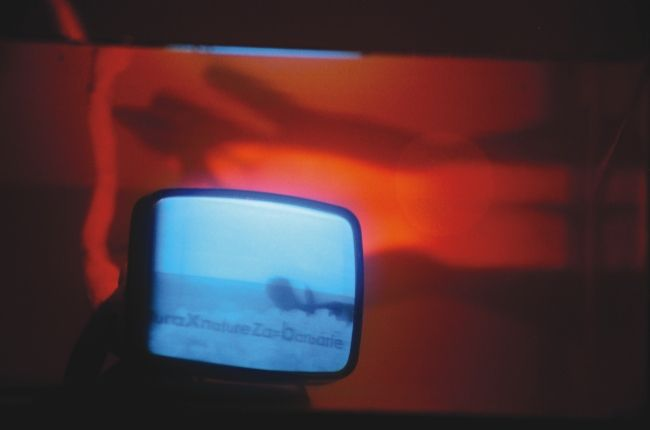


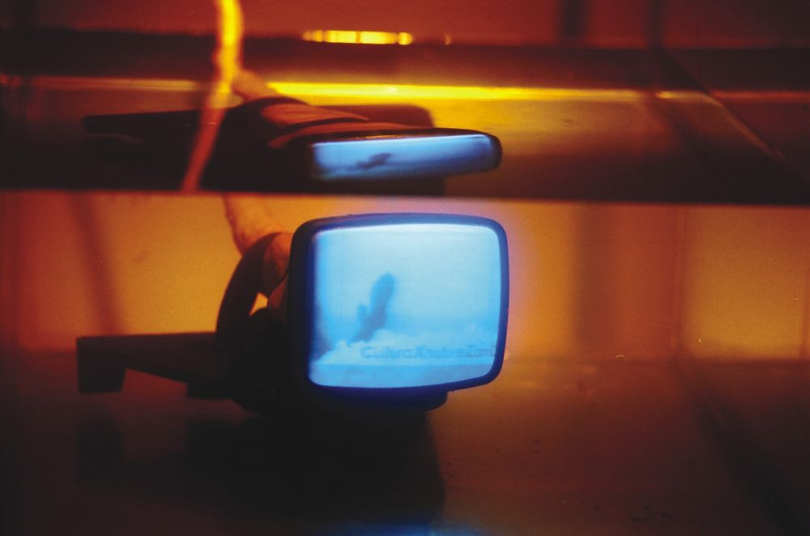


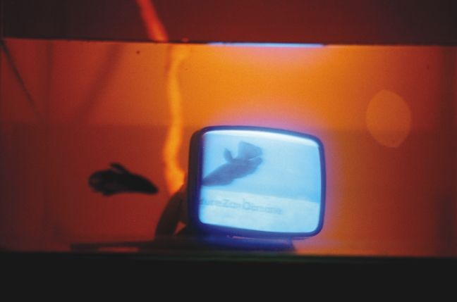


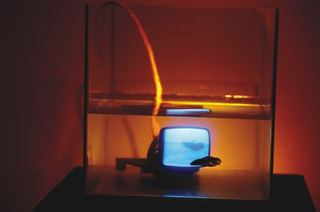

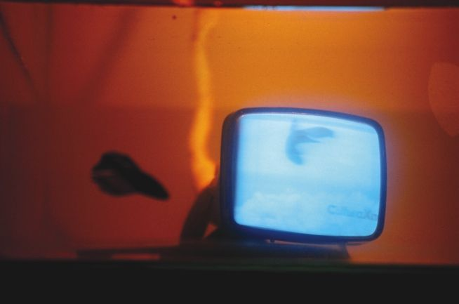
Cubo Cruz Lápide
1985 — do livro Instalações Barja
Textos que falam desta instalação
intor insatisfeito”. Insatisfeito e transgressor, Barja optou, desde o início, pela instalação como suporte para a sua reflexão-diálogo. A partir dos trabalhos de Barja, uma série de teóricos e artistas brasileiros e europeus: Evgene Bavcar, Mercedes Replinger, Adolfo Montejo Navas, Roland Campos, Angélica Madeira, Bené Fonteles e Marília Panitz produziram um conjunto importante de reflexões que acompanham esta compilação de registros que sobreviveram ao tempo. É possível, desse modo, aqui percorrer vinte anos de história por meio dos projetos e das instalações: “Experiência Tumulto (1985)”, “Cubo Cruz Lápide (1985)”, “O Profeta e a Jaguatirica (1985-86)”, “DO AKD-MICO AO POLE-MICO (1986)”, “Mognus Dei (1990)”, “O Sol de Goethe (1999)”, “São João Beuys (1990)”, “Ser ou não Ser, Ao Gullar (1993)”, “Pega Manet/De Onde Vem A Escuridão (1986)”, “TV Anal (1999)”, “Hermógenes (1999)”, “Obranome (2003)” e “Cultura X Natureza = Barbárie (1998/2005)” Marília Panitz, em seu texto “Ao que importa, uma resposta”, propõe um itinerário de leitura das obras de Barja, a partir do conceito de equação, tão caro ao artista. Nos “enigmas de equações visuais” dos comentários-construções de Barja, a aut
Livro Instalações Barja — pág. 5s, vivemos a fantasia da saída da barbárie (da animalidade) engolindo o que queríamos e o que não queríamos. Reconhecendo a ascendência, tanto dos mestres de 22, como do que ensina a poesia concreta brasileira, dois objetos/poemas visuais DO AKAD-MICO AO POLE-MICO brincam de desfazer tanto a “lei” da produção artística (e de pensamento) quanto a sua contestação. Como promessa e ameaça, o mico (em carne, osso e sentido figurado) se alinha às bananas que formam os dois prefixos, já afirmando a sua efemeridade (seu destino é tão claro quanto o olhar que o mico lança sobre elas). Já o bicho/caixa Cubo Cruz Lápide é comedor e devorado ao mesmo tempo engole as palavras como cubo e as vomita com o cruz. As inscrições de seu interior/avesso não oferecem sentido a priori, mas a materialidade das palavras sussurradas como a afirmar a fragilidade dos discursos que articulamos. A outra cruz pertence ao grupo de trabalhos que compõe a idéia das “Armadilhas Indígenas”, de Bené Fonteles: é o seu Mognos Dei, mais uma obranome que brinca de confundir referências e inscreve seu nome com a farinha de trigo da hóstia, matéria prima metaforizada na prática cristã, cujo ritual pressupõe a deglutição do
Livro Instalações Barja — pág. 8e que implicava na realidade outra consideração mais importante: se é possível conhecer a essência das coisas através da linguagem, elucidar o conteúdo de verdade que o nome do objeto, da coisa leva em si mesmo. Como pleiteia Barja na instalação seguinte, encontramo-nos, agora, diante de outra pergunta: Como ver o que nos cega? E, sobretudo, como contá-lo? A entrada do olhar: as palavras e as coisas Não há olhar direto, apenas reflexos, ângulos de visão oblíquos. Um olhar de lado é também o que propõe Barja, desta vez em outro registro: aquele que conduz da visão às palavras e vice versa. Em “Cubo Cruz Lápide” (1985), Barja enfrenta uma história não linear da modernidade: nomes de Hermógenes (1999
Livro Instalações Barja — pág. 17. Estamos pois, quase tentados a entender essa prática poética em termos de um processo biológico.Obranome nesse sentido é um autêntico metabolismo visual da palavra e do objeto entendidos como um organismo vivo. O rastro genealógico de obranome, sem dúvida, remonta aos ready made de Marcel Duchamp, ao poema espacial de Mallarmé, Marcel ou a poesia intermédia de Dick Higgins pertencente ao movimento Fluxus. Porém, sem sair do âmbito de seu próprio país, Wagner Barja insere-se em uma tradição específica brasileira que vai do concretismo e neoconcretismo até a poesia visual. Em primeiro lugar, “Cubo Cruz Lápide” (1985), como já foi mostrado, cumpre literalmente com o anunciado orgânico dos bichos que Lygia Clark realizara nos anos sessenta, estruturas geométricas de alumínio anodizado que podem, graças precisamente às dobradiças, adotar formas múltiplas, vivas e assimétricas. Uma metamorfose da razão geométrica em biologia por meio da peça que, com o próprio movimento, perfura o espaço e permite a participação direta do público: “integração total, existencial, estabelecida entre ele, o Bicho, e nós, os manipuladores do corpo a corpo entre duas entidades vivas” (20). Sem hesitar, Barj
Livro Instalações Barja — pág. 18alismo lingüístico do início da modernidade. Na poesia visual, as práticas intersemânticas introduziram, na comunicação visual, um certo tipo de subjetivação sígnica que só no trânsito entre palavra, objeto e imagem converte-se em obra”. Porém, a autêntica significação deste conceito se encontra quando Barja acrescenta: “O poema- objeto está entre a página e o espaço; nesse impasse assume a forma, a imagem e o inconformismo da palavra com a sua condição de descrever as coisas, ou de explicá-las, evoluindo para o âmbito do significar coisas e ser o significante delas” (24). A originalidade de “Cubo Cruz Lápide” (1985) como obranome dá-se na relação que estabelece com as obras precedentes ou com as filiações. Em primeiro lugar, Barja não renuncia ao objeto visual solto no espaço, nem tampouco à dimensão lingüística do processo artístico. “OBRANOME”, sem dúvida, anula totalmente as distâncias entre o nome e a coisa, entre a imagem e a palavra. No próprio termo encontra-se explícita a fusão entre o nome e a obra, como numa fita de Moebius, não há inverso e reverso, mas continuidade. Por exemplo, possivelmente aqui seja cubo cruz lápide
Livro Instalações Barja — pág. 19ma, que é pura significação” (25). Na minha opinião, o conceito de obranome que propõe Barja participa de todas as características que assinala Ferreira Gullar para a definição dele no objeto: imanência, significada que se deriva da própria forma, unidade, sem por ele, significativamente, renunciar ao nome. O conceito de obranome, literalmente é transparente porque incorpora definitivamente o nome à coisa. De algo exterior, esclarecedor do objeto que é, em geral, a função e a necessidade de nomear, Barja realiza uma operação que definitivamente o inclui no próprio processo da obra, do objeto.”Cubo Cruz Lápide” (1985) transforma-se em uma cristalização visual da imagem e da palavra que devora a informação contida; no interior do cubo-cruz-livro, as palavras e a imagem se alimentam mutuamente. Uma dialética no fronteiriço onde o objeto e a linguagem, por proximidade, alimentam-se mutuamente e desprendem-se feixes de inesperada luminosidade umas sobre as outras, até gerar outro objeto estético. Neste caso concreto, as metamorfoses do cubo e da cruz resolvem-se em uma lápide onde o passado, a tradição, a modernidade não podem ser irrevogavelmente passado, mas atualidade que tece as per
Livro Instalações Barja — pág. 20cubo cruz lápide - 1985
Livro Instalações Barja — pág. 47isfied and transgressive, Barja has, since the beginning, opted for the installation as the support for his dialogue-reflections. Examining Barja’s artwork, a series of Brazilian and European theoreticians and artists – Evgen Bavcar, Mercedes Replinger, Adolfo Navas, Roland Campos, Angélica Madeira, Bené Fonteles and Marília Panitz – have produced a relevant assemblage of reflections based on this compilation of records, which have survived the passage of time. Thus, it is possible to traverse twenty years of history through projects and installations such as: “Turbulence Experience (1984)”, “Cube Cross Tombstone (1985)”, “The Prophet and the Ocelet (1985-86)”, “From AKD-Mico to POLE-Mico (1986)”, “Mognus Dei (1990)”, “Goethe’s Sun (1999)”, “Saint John Beuys (1990)”, “To Be or Not to Be, for Gullar (1993)”, “Pick Manet/From Whence the Darkness (1986)”, “ANAL TV (1999)”, “Hermogenes (1999)”, “WORKNAME (2003)” e “Culture X Nature = Barbarism (1997/005)” Marília Panitz, in her commentary “Concerning What Matters, A Response”, proposes an itinerary for a reading of Barja’s work, based on the artist’s cherished equation concept. Speaking of the “visual equation enigmas” found in Barja’s
Livro Instalações Barja — pág. 85Cubo Cruz Lápide (1985), illusion that image may be created by the fusion of objective reality and individual imagination in a single area. Spectators literally walk in the shoes of the blind and dwell for a moment inside an imaginary backdrop of brilliant darkness. For an instant, the brain is a magic lantern, i.e., projecting rather than recording an impression undifferentiated from the outside world protected by sight. Why, we might ask, should the spectator be guided rather than allowed to move about freely in the darkness? First of all, light has its own geometry, a pattern of luminous rays that a
Livro Instalações Barja — pág. 97Cubo Cruz Lápide (1985) A virtuoso minimalist box - what you see is what you see – animalized like a voracious mouth that carries inside it the history of the avant-garde reflected in key-words such as Marcele, L’estaque, Ceret, Apollinaire, Vauxcelles... Words, says Wagner Barja, that attempt meaningful expression in the midst of historical confusion. An interactive piece, whose movement disrupts the purely linear direction of historical text and, in doing so, proposes a new concept of space within the body of language. Not surprisingly, Wagner classifies this work as one of his first obranames. From
Livro Instalações Barja — pág. 98
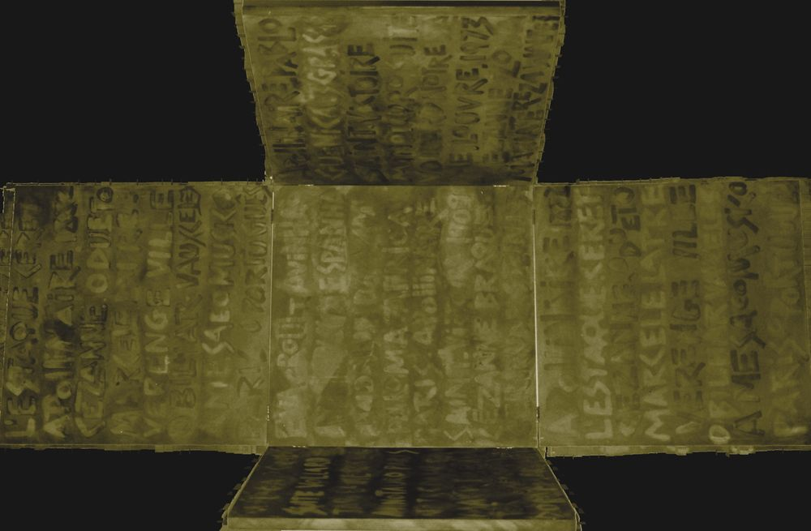

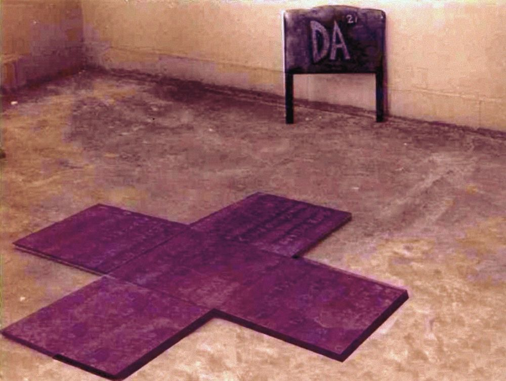
FIKE
1986 — do livro Instalações Barja
Textos que falam desta instalação
A morte de Lygia: O que fazer sozinho e anônimo em um velório de outro anônimo que depois se descobre ser Lygia Clark? ...Uma proposta poética que dê conta do inusitado do fato (que é real). Uma outra lápide talvez. Um FIKE que desfia os fios da proposta da modernidade levada ao extremo (seu fim). As fitas amarelas, azuis e vermelhas, justa homenagem a quem desafiou esses extremos e eliminou fronteiras entre arte e as (outras) coisas do mundo (com seus muitos outros fios desfiados em várias obras). Que deixar para o mundo, Mondrian? Fitas amarelas, azuis e vermelhas que comparecem recorrentemente como metáfora de um pensamento sobre (de) pintura como em De onde vem a escuridão ou em “ Pega Manet ”[4]. No primeiro trabalho, elas são elos entre as partes que não conversam necessariamente entre si, são o sustentácu
Livro Instalações Barja — pág. 9para formar séries e contextos intelectuais”. (...) O conceito é uma fórmula, pura e simples; sua ornamentação (uma expansão devida aos materiais adicionais) transforma a fórmula em imagem uma forma acabada. Exatamente assim, embora em sentido contrário, como um processo de pensamento primitivo o pensamento imagístico, deslocado até um ponto definido, acaba-se transformando em raciocínio conceitual. Eisenstein, Serguei, "O princípio cinematográfico e o ideograma", In, Campos, Haroldo de, Ideograma - lógica, poesia e linguagem, p. 149-166. deitado eternamente H O monet márcia X c/ m.duchamp DA fike são joão beuys expressosionista
Livro Instalações Barja — pág. 11Longe de considerar que a poética de Wagner Barja esteja fora da poesia visual, se deve inscrever nas suas coordenadas de olhar expandido grande parte de seus trabalhos. Sobretudo aqueles nos quais a nomenclatura faz parte da obra, o seu nomear está em função determinante, num triângulo de potências verbais, conceituais e visuais. São vários os trabalhos então, que passam a funcionar com o elemento verbo-visual ativado, gerando um campo plural de forças estéticas, onde até o território da sensorialidade é produzido por contigüidade conceitual e reflexiva. Assim o conjunto de Da², H2O Monet, Fike e até Natureza X Cultura = Barbárie se aproxima. Neles, a conversa submersa que se estabelece e visa certa infinitude, numa escrita (“esse jogo insensato de escrever”, como diria Blanchot), que aqui aposta também numa simultaneidade de linguagem. A própria idéia de “Obranome”, (motivo de curadoria e obra), está nessa freqüência não reducionista. Barja veicula uma corrente de pensamento que não quer repousar na anestesia retiniana, nesse sentido, não deixa de ser um sintoma, que o artista tenha orientado-se para alguns trabalhos sobre a cegueira, como para uma investigação da transparência,
Livro Instalações Barja — pág. 33FIKE -1986
Livro Instalações Barja — pág. 45the prophet and the ocelot nature x culture = barbarism o casamento de Márcia X com Marcel Ducham The death of Lygia: What would you do alone and anonymous at the wake of another anonymous person whom you later discovered to be Lygia Clark?… A poetic proposal that recognizes the unusualness of the fact (which is real). Maybe another tombstone. A FIKE that challenges the fiber of the modernist proposal taken to its extreme (its end). The red, blue, and yellow ribbons offer fitting homage to one who challenged these extremes and eliminated the barriers between art and (other) things of this world (with its many other fibers challenged in various works). What to leave the world, Mondrian? Red, yellow and blue ribbons make recurrent appearances as a metaphor for a thought about (of) painting, as in From Whence the Darkness or Pick Manet and Pick Monet. . In the first work, they are links between parts that do not necessarily converse amongst
Livro Instalações Barja — pág. 89the marriage of Márcia X and Marcel Duchamp Prophet and the Ocelot - 1986 DA2 Mognus Dei -1999 laid out eternally… H O monet Mme X / m.duchamp DA fike saint john beuys zionistexpress Notes: 1 - These works were exhibited in Brasilia, at the Conjunto Cultural da Caixa; in Buenos Aires, at the Centro de Arte Moderno de Quilmes; and in Madrid, at the Centro Cultural El Cruce; each time, a conversation was established with the local community (in Madrid, for example, blind lottery-ticket vendors from the streets were engaged in participating). 2 - The original 80’s version of TurbulenceExperience was developed in partnership with Márcia X and Alex Hamburger in Rio de Janeiro. The second version, exhibited in Brasilia in 2002, was a reworking an
Livro Instalações Barja — pág. 91in Wagner Barja's work to fall outside the realm of visual poetry, we should see that the majority of his works fit right into the expanded visual coordinates of that medium. This is especially true when the nomenclature forms part of the work, and the naming has a determinant function in a triangle of verbal, conceptual and visual powers. Many of these works, in fact, are based on the activation of this verbal-visual element which generates a multiple aesthetic force field where even the sensorial territory is produced by conceptual and reflexive contiguity. The installations Da², H2OMonet, Fike and even Natureza versus Cultura = Barbárie stand as examples. Present in each is the submerged conversation that establishes itself and reaches for a certain infinitude, in written words (“this insane game of writing”, as Blanchot would say) that, here, also compete for a simultaneity of languages. The very idea of “Obranome”, (curatorial and work motif) operates on this non-reductionist frequency. The current of thought Barja transmits is unwilling to loll in retinal anesthesia. It is, in a way, a symptom, one which the artist has channeled into certain works whose shared theme is blindn
Livro Instalações Barja — pág. 112

Deitado Eternamente
1986 — do livro Instalações Barja
Textos que falam desta instalação
DEITADO ETERNAMENTE FOTO Daniel Mira DEITADO ETERNAMENTE 1985
Catálogo Experiência Tumulto III — pág. 20da e de travessia, não cessa de dissolver-se e transformar-se. Bachelard lembra que o sonhador da água é um ser em vertigem que deixa constan- temente desmoronar algo de si. Para ele a água é matéria que está sempre prestes a tornar-se outra. Os híbridos e os fora de lugar provocam estranha- mentos, como provocaram os monstros míticos do medievo ou os ready made de Marcel Duchamp. Tu- multuam, des-consertam, des-estabilizam e levam a rearranjos em nossa percepção. Obra síntese da exposição Experiência Tumulto III, Jonas carrega a trajetória do artista, que vem praticando desloca- mentos desde Deitado eternamente de 1986. É um tirar coisas do lugar e reordenar, mas não, sem antes passar pelas entranhas do tumulto antropofágico, que pode instigar territórios de existência e alterar os modos de subjetivação hegemônicos. No caldeirão de bruxas da arte contemporânea, me- xem-se poções que misturam procedimentos trazi- dos da história da arte. Em Jonas, além de evocar o mítico/bíblico Jonas, engolido pela baleia e as práti- cas medievais da fundição, o artista nos remete ao dadaísmo e ao minimalismo, pois pratica desloca- mentos e repetições. As vértebras aladas expostas em forma de uma
Catálogo Experiência Tumulto III — pág. 78va-riáveis 2- Redução de uma questão, um problema intrincado, a pontos simples e claros, para facilitar a ob-tenção de uma solução.[6] Uma forma de organizar as coisas sob uma aparência de casualidade e caos. Uma economia de signos para evocar diferentes narrativas. Condensação de sentidos, cuja ferramenta é o humor... Assim como naquela cama de campanha de estrutura verde, cuja lona é do amarelo da bandeira nacional e, à maneira de um travesseiro, já fora de lugar pelo uso, está jogado o círculo azul, onde a inscrição positivista que nos constitui como nação é substituída pelo verso do hino “Deitado eternamente...”. Ou talvez, como na proposta de (di)fusão entre a expressão (já antropofágica) do barroco brasileiro e o seu suporte de florescimento: a “terra brasilis”. Essa é talvez uma pré (re) leitura da equação proposta no jogo dos aquários “Natureza X Cultura = Barbárie” : seu livro/equação “O Profeta e a Jaguatirica”, no qual o Oséias de Aleijadinho (aquele profeta que simboliza a infidelidade do povo judeu ao verdadeiro Deus) divide o espaço com o couro estendido do felino, surgindo por detrás de dois recobrimentos o que quase submerge as imagens, uma superfície de plumas; e a
Livro Instalações Barja — pág. 10s que pintam, de significado singelo e conteúdo neutro para formar séries e contextos intelectuais”. (...) O conceito é uma fórmula, pura e simples; sua ornamentação (uma expansão devida aos materiais adicionais) transforma a fórmula em imagem uma forma acabada. Exatamente assim, embora em sentido contrário, como um processo de pensamento primitivo o pensamento imagístico, deslocado até um ponto definido, acaba-se transformando em raciocínio conceitual. Eisenstein, Serguei, "O princípio cinematográfico e o ideograma", In, Campos, Haroldo de, Ideograma - lógica, poesia e linguagem, p. 149-166. deitado eternamente H O monet márcia X c/ m.duchamp DA fike são joão beuys expressosionista
Livro Instalações Barja — pág. 11deitado eternamente - 1986
Livro Instalações Barja — pág. 44Expresso Sionista Deitado eternamente..-1986. and possessing another function), suggests an ambiguous relationship between absorbing and expelling (swallowing and defecating). More metonymic operation than metaphor, as already pointed out by Barthes in his essay on Bataille's Story of the Eye, the anus is standing in for the body, for the eye, giving to this latter an excretory function (by selecting or digesting what is seen). The concreteness (and ephemerality) of words: The idea of "eating" ideas comes to us from the early part of the 20th century, when a metaphor was made of the cannibalism practiced among the natives of the
Livro Instalações Barja — pág. 88

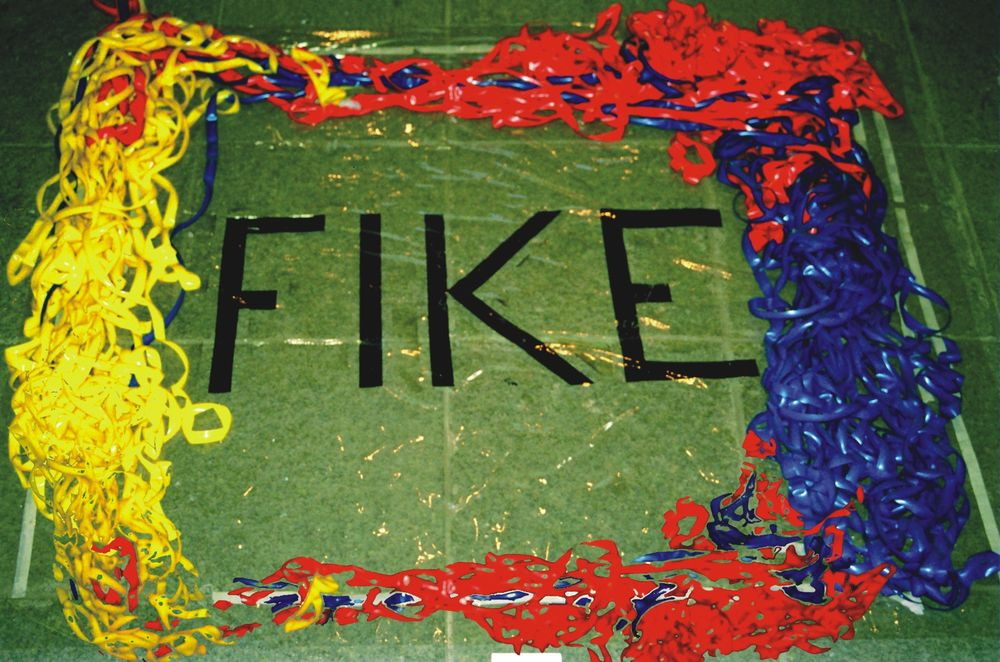
Ficha técnica do livro
Organização editorial e pesquisa: Maria Gorette de O. Azevedo Barja · Digitalização e diagramação: Paulo Cesar Müller · Fotos: Gustavo Magalhães, Mila Petrillo e Gabriel Barja · Tradução: Andrea Lee Katz · Revisão: Yves Hubleto.